Español o inglés, con los botones ES · EN de la barra superior. En este manual los nombres de botones y menús se escriben como aparecen en pantalla en español, por ejemplo Ejecutar modelos →.
Cómo citar el programa
Barrera-Guzmán, L. Á., Ramírez-Ojeda, G., Cadena-Iñiguez, J., Cadena-Zamudio, D. A., Cadena-Zamudio, J. D. y Mojica-Zárate, H. T. (2026). BioModelling Pro: biogeografía y modelado de la distribución de especies en el navegador (versión 1.0.0) [Programa de cómputo].
Cómo citar este manual
Barrera-Guzmán, L. Á., Ramírez-Ojeda, G., Cadena-Iñiguez, J., Cadena-Zamudio, D. A., Cadena-Zamudio, J. D. y Mojica-Zárate, H. T. (2026). BioModelling Pro. Manual de usuario (1.ª ed.). Distribuido con BioModelling Pro, versión 1.0.0.
El identificador de objeto digital (DOI) se añadirá a las dos citas cuando la versión 1.0.0 quede archivada. Mientras tanto, la cita del programa está también en la sección Cómo citar de la portada de la app, con su versión en BibTeX.
iTus datos no salen de tu computadora
BioModelling Pro trabaja dentro del navegador: los archivos que abres se leen en tu equipo y ningún dato tuyo se sube a ningún servidor. Sí hace falta internet para consultar GBIF, dibujar el mapa base y descargar el motor de cálculo la primera vez. La única consulta que envía coordenadas es la de tipo de suelo del Bloque 5, que es opcional.
Las ilustraciones, los diagramas y las capturas de este manual son originales. Los datos del ejemplo se describen en la sección I.7.
El manual sigue el mismo orden que la app: diez bloques numerados que se recorren de izquierda a derecha en la barra superior. Cada capítulo explica un bloque y lleva su mismo número: el capítulo 3 es el Bloque 3, y sus secciones, figuras y tablas se numeran 3.1, 3.2… Cada capítulo empieza con la teoría indispensable, sigue con lo que calcula la app y cómo se lee, y termina con un ejemplo paso a paso con los datos que ya vienen dentro del programa. La introducción va antes de los bloques y se numera aparte: I.1, I.2…
Un color para cada bloque
El color del bloque aparece en la apertura de su capítulo, en los números de sección, en la pestaña del borde de la hoja y en el índice, y es el mismo de la franja de la portada. Así sabes de un vistazo en qué parte de la app estás.
Bloque
Nombre en la app
Qué hace
1
1 GBIF
Busca la especie en GBIF y trae sus registros con coordenadas, o carga los tuyos desde un archivo
2
2 Filtrar
Filtra por taxón, país, año, tipo de registro, recuadro geográfico y estado o región de México
3
3 Depurar
Nueve reglas de calidad de coordenadas con un reporte de antes y después
4
4 Mapa
Mapa de los registros y estudio de mapas: capas base, leyenda, escala, rosa de los vientos y exportación
5
5 Variables
Extrae en cada punto las 19 variables bioclimáticas, la altitud, el clima de Köppen-Geiger y el suelo
6
6 Correlación
Matriz de correlación, VIF y una selección de variables poco colineales que respeta las que fijas
7
7 Estadística
Descriptiva, histogramas, cajas, normalidad y transformaciones, con figuras editables al detalle
8
8 ML y ecología
ACP, agrupamientos, correspondencias, área de distribución, amplitud de nicho y diversidad
9
9 Modelado SDM
Diez algoritmos y un ensamble, validación, umbrales, mapas y proyección a escenarios futuros
10
10 Agroclima
Índices agroclimáticos y aptitud de cultivos sobre el mismo clima, hoy y a futuro
Tipos de recuadros
iNota
Aclaraciones y consejos prácticos que ahorran tiempo.
!Importante
Lo que puede cambiar tus conclusiones si se pasa por alto.
θTeoría en breve
La idea detrás de un análisis, sin fórmulas innecesarias.
▸Ejemplo
Un caso con los datos incluidos en el programa, paso a paso.
✓Regla de decisión
Si el resultado cae en este caso…
entonces esta es la lectura recomendada.
Son guías para interpretar, no leyes: lo que sabes de tu especie y de tu región siempre manda.
97
Dato clave
Fichas de ayuda que la app trae dentro, una por índice o estadístico, con su escala de lectura, el error más común y la referencia de donde sale.
Convenciones de escritura
Así se escribe
Significa
Preparar datos del modelo →
Un botón, casilla o menú de la app, con su texto tal como aparece en pantalla en español.
Estudio de mapa›Exportar›Recortar al país
Una ruta: abre el primer elemento, luego el segundo y así.
decimalLatitude, .tif
Un nombre de columna, archivo o valor que se escribe tal cual.
BIO1, BIO12 · AUC, TSS
Variables e índices; su significado se explica la primera vez que aparecen y se reúne en el glosario.
Pinus cembroides
Los nombres científicos van en cursiva, como en cualquier texto biológico.
●◐—
Disponible · disponible en parte o con condiciones · no aplica.
iSi vienes de otro programa
Quien ya haya modelado nichos reconocerá el camino: registros depurados, capas ambientales, selección de variables, ajuste, validación y proyección. Lo que cambia es que aquí todo ocurre en una sola ventana, sin instalar nada, y que cada resultado trae su ficha de lectura al lado. Los nombres de los métodos son los de la literatura, y se citan por su artículo original.
In
Introducción · Antes de los bloques
Introducción a BioModelling Pro
Qué es el programa, qué preguntas de biogeografía responde, qué datos acepta y cómo se recorre de principio a fin. Incluye las cinco ideas del modelado de nicho que sostienen el resto del manual.
I.1¿Qué es BioModelling Pro?
I.2Preguntas que responde
I.3Cinco ideas clave del modelado de nicho
I.4Datos que acepta
I.5Qué necesitas y cómo abrirlo
I.6Recorrido por la interfaz
I.7El ejemplo incluido: el piñonero
I.8Flujo de trabajo recomendado
I.9Cómo leer los números
I.1¿Qué es BioModelling Pro?
BioModelling Pro es una plataforma para hacer un estudio de distribución de especies completo, del registro al mapa: descarga los registros de presencia, los depura, extrae el clima, la altitud y el suelo en cada punto, los explora con estadística y métodos multivariados, ajusta y valida modelos de distribución, proyecta el resultado a escenarios de clima futuro y evalúa la aptitud agroclimática de cultivos sobre ese mismo territorio.
Todo ocurre dentro del navegador. No hay que instalar nada, no hace falta programar y los datos no salen de tu computadora. El mismo camino sirve para una especie silvestre, para un pariente silvestre de un cultivo o para un cultivo: cambia la pregunta, no el flujo.
Figura I.1. Los diez bloques. Los cinco primeros preparan los datos; los cinco siguientes los analizan. Cada bloque deja lista la entrada del que sigue, y todos beben del mismo conjunto depurado.
I.2Preguntas que responde
Estas son preguntas reales de tesis, de artículo y de proyecto que el programa contesta con los datos que tú ya tienes o que puedes descargar en unos minutos:
¿Dónde vive hoy mi especie y dónde podría vivir? El mapa de idoneidad del Bloque 9 señala las zonas con el clima que la especie ocupa, incluso donde nadie la ha colectado todavía.
¿Qué variables del clima explican su distribución? La importancia por permutación y las curvas de respuesta del Bloque 9 lo dicen, después de que el Bloque 6 descarta las variables que se repiten entre sí.
¿Qué tan bien predice mi modelo? Validación por bloques espaciales con AUC, TSS y el índice de Boyce, y umbrales para convertir la idoneidad en un mapa de presencia y ausencia.
¿Qué pasará con el cambio climático? La proyección a varios escenarios, periodos y modelos climáticos, con el área que se gana y se pierde, el desplazamiento del centro de la distribución y los refugios.
¿Qué tan amenazada está? La extensión de la presencia (EOO) y el área de ocupación (AOO) del Bloque 8, con los umbrales de las listas rojas.
¿Los subtaxones ocupan ambientes distintos? Solapamiento de nicho, ordenaciones y agrupamientos del Bloque 8.
¿Qué cultivo conviene a esta región, hoy y en treinta años? El Bloque 10 calcula grados-día, heladas, horas frío, balance hídrico y aptitud por cultivo, con su calendario de siembra y su factor limitante.
!Lo que un modelo de distribución no es
Un mapa de idoneidad no es un mapa de presencia comprobada, ni un censo, ni una predicción de abundancia. Dice dónde el ambiente se parece al de los lugares donde la especie ha sido registrada. Que una zona salga idónea no significa que la especie esté ahí: puede no haber llegado, puede haber sido eliminada, o puede que la excluya un competidor, el suelo o el uso de la tierra. Esa distinción, con nombre y apellido, es la sección I.3.
I.3Cinco ideas clave del modelado de nicho
Cinco ideas bastan para entender todo lo que hace la app. Vuelven en cada capítulo.
1. El nicho es un espacio de variables, la distribución es un espacio geográfico
Hutchinson (1957) definió el nicho como el conjunto de condiciones en las que una población persiste: un volumen en un espacio de n variables (temperatura, lluvia, altitud…). Ese volumen no se ve en un mapa, pero cada punto del mapa tiene su lugar dentro de él. Modelar consiste en ir y venir entre los dos espacios: se aprende el nicho en el espacio ambiental y se dibuja en el geográfico.
Figura I.2. Los dos espacios. El modelo aprende en el espacio ambiental —dónde caen los registros dentro del rango de temperatura y lluvia— y proyecta ese resultado sobre el mapa. Los mismos puntos aparecen en los dos lados.
2. Nicho fundamental, nicho realizado y lo que el modelo alcanza a ver
El nicho fundamental es todo lo que la fisiología permite; el realizado es la parte que la especie ocupa de verdad, ya recortada por los competidores, los depredadores y la historia. Con registros de presencia se estima algo cercano al realizado, y solo dentro del ambiente que existe en la región de estudio. Por eso el área que se elige para modelar cambia el resultado: es una decisión del investigador, no un detalle técnico.
3. El diagrama BAM: no todo lo idóneo está ocupado
Soberón y Peterson (2005) lo resumieron en tres conjuntos: B lo que permiten las interacciones bióticas, A lo que permite el ambiente abiótico y M lo que la especie ha podido alcanzar con su movilidad. La distribución observada vive en la intersección. La app modela sobre todo la parte A; por eso hay zonas idóneas sin presencia.
Figura I.3. El diagrama BAM. La app estima sobre todo A; el área de estudio que elijas en el Bloque 9 es tu hipótesis sobre M, y B casi siempre queda fuera del modelo. Conviene decirlo así en el artículo.
4. Los registros traen sesgos, y el sesgo se parece a una señal
Las colectas se acumulan junto a las carreteras, cerca de las ciudades y en las áreas naturales protegidas. Un modelo ingenuo aprende ese patrón de muestreo en lugar del nicho. Por eso el Bloque 3 quita duplicados, centroides de país y coordenadas imposibles, el Bloque 9 puede dejar una sola presencia por celda, y la validación se hace por bloques espaciales y no al azar: con puntos cercanos, una validación al azar regala resultados excelentes que no se sostienen en un sitio nuevo.
5. Extrapolar es distinto de interpolar
Cuando el modelo se proyecta a otro tiempo o a otra región aparecen combinaciones de clima que nunca vio. Ahí la predicción es una extensión de la fórmula, no una estimación apoyada en datos. El mapa MESS del Bloque 9 marca esas zonas, y el manual insiste en mostrarlas siempre que se publique una proyección a futuro.
I.4Datos que acepta
Qué
Formato
Dónde entra y qué conviene saber
Registros de presencia
descarga de GBIF
Bloque 1. Basta el nombre científico: la app resuelve el taxón y trae los registros con coordenadas, con barra de progreso, tope configurable y un filtro de países —México, Centroamérica y Sudamérica— que se aplica en la propia consulta.
Tus propios registros
.csv, .txt, .xlsx o pegado
Bloque 1. Tres columnas bastan: especie, longitud y latitud. Acepta coma decimal, grados-minutos-segundos y archivos guardados en Windows; puedes sumarlos a los de GBIF o usarlos solos.
Capas climáticas
.tif (GeoTIFF)
Bloque 5. Las 19 variables bioclimáticas y la altitud de WorldClim 2.1, en la resolución que descargues. La app lee solo la ventana que necesita, así que no carga el archivo completo a la memoria.
Clima de Köppen-Geiger
.tif
Bloque 5. Categórica: la app trae la tabla de claves y nombres de las clases.
Tipo de suelo
consulta en línea
Bloque 5, opcional. Pregunta punto por punto a un servicio público; es la única consulta que envía coordenadas.
Escenarios futuros
.tif
Bloque 9. Un archivo de 19 bandas o capas sueltas por variable, para cada modelo climático, trayectoria y periodo.
Capas mensuales
.tif
Bloque 10. Temperatura mínima, máxima y precipitación mes a mes, que es lo que piden los índices agroclimáticos.
Regiones propias
.geojson
Bloque 2. Municipios, cuencas, áreas protegidas: cualquier capa de polígonos sirve para filtrar y para recortar los mapas.
iPara empezar no necesitas descargar nada
El programa trae dentro un ejemplo completo: 2,400 registros de GBIF y capas climáticas recortadas a todo México. Con eso puedes recorrer los diez bloques, probar cada botón y reproducir todas las figuras de este manual antes de trabajar con tus propios datos.
I.5Qué necesitas y cómo abrirlo
Un navegador de internet al día. Cualquiera de los de uso común, en Windows, macOS o Linux. No se instala nada más.
Abre index.html con doble clic. Así funciona todo, incluido el ejemplo incrustado. También puedes usar el servidor local que viene con el programa si prefieres abrirlo desde otra computadora de la misma red.
Conexión a internet para tres cosas: consultar GBIF, dibujar el mapa base y descargar el motor de cálculo la primera vez que entras a un bloque que lo usa. El resto —la lectura de tus archivos, los cálculos y las figuras— funciona sin conexión.
Elige idioma y tema en la barra superior: ES o EN, y claro u oscuro. La elección se recuerda y las figuras se redibujan solas.
!La primera vez que entras a un bloque de cálculo
Los bloques 7, 8, 9 y 10 usan un motor de Python que corre dentro del navegador. La primera vez tarda entre unos segundos y un par de minutos en descargarse, según tu conexión, y aparece un aviso de progreso. Después queda en la memoria del navegador y los análisis siguientes son inmediatos.
I.6Recorrido por la interfaz
La ventana tiene siempre las mismas tres partes:
La barra superior, con el nombre del programa, los botones ES · EN, el interruptor de tema y la ruta de bloques: ⌂ Inicio y los diez pasos numerados. Se puede saltar de uno a otro en cualquier momento; lo que ya calculaste se conserva.
La portada (⌂ Inicio), con el resumen del flujo, las tarjetas de los diez pasos, la galería de métodos, la teoría, las referencias, la forma de citar y un laboratorio de especie virtual: un paisaje inventado con un nicho que tú defines, presencias muestreadas con o sin sesgo y tres algoritmos que intentan recuperarlo. Es el mejor lugar para entender qué hace un modelo antes de usar datos reales.
El panel del bloque, siempre con la misma estructura: arriba una caja que dice para qué sirve el paso y qué decides en él, luego los controles, después los resultados en tarjetas, tablas y figuras, y al final una guía de interpretación plegable. Junto a cada número hay un botón de ayuda que abre su ficha.
θLas fichas de ayuda
Cada ficha dice cuatro cosas en este orden: qué mide ese número en palabras llanas, cómo se lee, en qué escala —con una barra de bandas de colores que marca dónde cae tu valor— y el error más común al usarlo, y cierra con la referencia de donde sale. Cuando la escala es una convención de lectura y no una ley estadística, la ficha lo dice; cuando no existe una escala aceptada, también lo dice en lugar de inventarla.
I.7El ejemplo incluido: el piñonero
Todos los ejemplos de este manual usan el mismo conjunto, que viene dentro del programa: los registros del piñonero, Pinus cembroides Zucc., un pino de semilla comestible de las sierras secas del norte y centro de México. Es un buen caso de estudio porque su distribución es amplia pero fragmentada, está ligada a un clima semiárido de montaña bien definido, y tiene subespecies y variedades descritas.
Del conjunto de ejemplo
Qué contiene
Registros
2,400 descargados de GBIF el 21 de septiembre de 2026, de los 5,329 que reportaba la consulta
Países
México 1,719 · Estados Unidos 670 · Nueva Zelanda 8 · Francia 2 · Austria 1
Nombres
7 formas: la especie (2,281) y seis subespecies y variedades (orizabensis, cembroides, lagunae)
Tipo de registro
observación humana 1,343 · ejemplar de herbario 967 · otros 90
Años
de 1982 a 2026
Capas
las 19 variables bioclimáticas, la altitud y el clima de Köppen-Geiger a 10 minutos de arco (≈ 18 km), recortadas a lon −122° a −86° y lat 13° a 40°: todo México y el suroeste de Estados Unidos
▸Los once registros que valen una lección
Once de esos 2,400 registros están en Nueva Zelanda, Francia y Austria: son árboles cultivados en jardines botánicos y arboretos, no poblaciones naturales. GBIF los entrega sin distinguirlos, y si se dejan pasar el modelo intenta explicar el clima de Europa y de Oceanía con el nicho de una sierra mexicana. Los capítulos 2 y 3 muestran cómo se detectan y qué hacer con ellos. No son un defecto del ejemplo: son lo que llega en cualquier descarga real.
I.8Flujo de trabajo recomendado
El orden de los bloques es el orden en el que conviene trabajar, pero no es una camisa de fuerza: se puede volver atrás, cambiar un filtro y recalcular. Este es el camino corto para un estudio típico:
Trae los registros (Bloque 1) y revisa cuántos son y de dónde vienen.
Filtra (Bloque 2) por taxón y por país o región. Aquí se decide el área de estudio, que es una decisión ecológica, no de comodidad.
Depura (Bloque 3) y mira la tabla de antes y después: cada regla te dice cuántos registros quita y por qué.
Mira el mapa (Bloque 4). Un vistazo revela los errores que ninguna regla detecta: puntos en el mar, en el país equivocado o en un solo jardín botánico.
Extrae el ambiente (Bloque 5) en cada punto y revisa cuántos quedaron sin dato.
Elige las variables (Bloque 6). Quédate con las que aporten información distinta y con las que tengan sentido para tu especie, aunque estén correlacionadas.
Descríbelas (Bloque 7): así sabrás en qué rango de temperatura y lluvia vive tu especie antes de modelar nada.
Explora la estructura (Bloque 8): ordenación, grupos, área de distribución y amplitud de nicho.
Modela y valida (Bloque 9). Empieza con dos o tres algoritmos y validación por bloques; deja el ensamble y el futuro para cuando el modelo base te convenza.
Si tu pregunta es agrícola, sigue al Bloque 10 con las capas mensuales.
iGuarda a medida que avanzas
Cada bloque permite descargar lo que produce: el CSV de los registros depurados, la tabla de puntos por variables, las métricas, los mapas y las figuras. Descargar el CSV depurado al terminar el Bloque 3 cuesta un clic y evita repetir la descarga de GBIF si cierras el navegador.
I.9Cómo leer los números: escalas y umbrales
Este manual, como la app, distingue tres clases de referencia numérica, y conviene no confundirlas al escribir los resultados:
Clase
Ejemplos
Cómo tratarla
Convención de lectura
|r| > 0.7 es colinealidad alta; AUC > 0.8 es un buen modelo; VIF > 10 es problema
Son costumbres útiles, no leyes: se citan como tales y se acompañan del valor exacto.
Umbral publicado
EOO < 20,000 km² y AOO < 2,000 km² de las listas rojas; MESS < 0 marca extrapolación
Vienen de un criterio formal; se citan con su fuente y con la advertencia de que un umbral solo no asigna una categoría.
Sin escala aceptada
curtosis, índice de Dunn, grados-día acumulados, riqueza observada
Se comparan entre sí —entre regiones, entre modelos, entre años—, nunca contra un número mágico.
Cuando el manual dé una banda de valores, dirá a cuál de las tres clases pertenece. Y siempre que un número dependa del tamaño de muestra, del área de estudio o de la resolución de las capas —que son casi todos—, se dirá también de qué depende.
✓Tres preguntas antes de publicar un mapa
¿Qué área modelé?
Dilo en el texto y muéstralo en el mapa: el área de estudio es una hipótesis sobre a dónde ha podido llegar la especie.
¿Cómo validé?
Bloques espaciales, con AUC, TSS y Boyce, y el número de presencias que entraron.
¿Dónde extrapolé?
Acompaña toda proyección a futuro con su mapa MESS o, al menos, con el porcentaje del área en extrapolación.
Las tres respuestas caben en dos renglones de la sección de métodos y evitan la mitad de las observaciones de los revisores.
1
Bloque 1 · El punto de partida
Registros de presencia: GBIF y tus propios datos
De dónde salen los puntos que se van a modelar. Cómo se resuelve un nombre científico, cómo se descargan los registros de GBIF sin perder el control de lo que llega, y cómo entra una tabla propia de campo o de herbario.
1.1Qué es un registro de presencia
1.2GBIF en dos minutos
1.3Resolver el nombre científico
1.4Traer los registros y filtrar por país
1.5Lo que llega y cómo se ve
1.6Tus propios registros
1.7¿Cuántos registros hacen falta?
1.8Problemas frecuentes
1.1Qué es un registro de presencia
Un registro de presencia es la afirmación de que un organismo de cierta especie estuvo en cierto lugar en cierto momento, hecha por alguien que lo vio o lo colectó. Todo lo que hace este programa descansa en esa frase, así que vale la pena desarmarla.
Un registro útil para modelar necesita tres cosas: un nombre en el que podamos confiar, unas coordenadas en grados decimales y una idea de su precisión. El resto —quién lo colectó, en qué herbario está, qué año fue— sirve para filtrar y para dar crédito, pero no entra en el modelo.
θPresencia no es lo contrario de ausencia
Que no haya registros en una zona puede significar tres cosas muy distintas: que la especie no está, que está pero nadie ha ido a buscarla, o que fue buscada y no encontrada. Los datos de GBIF casi nunca distinguen entre ellas. Por eso los métodos de este programa son de solo presencia: aprenden del contraste entre los sitios donde la especie fue registrada y una muestra del ambiente disponible en la región, no entre presencias y ausencias verdaderas. Es la diferencia entre decir «aquí el clima se parece al de los lugares donde vive» y «aquí vive».
Campo
Qué es y por qué importa
decimalLatitude decimalLongitude
La coordenada en grados decimales, con el signo negativo al oeste de Greenwich y al sur del ecuador. México entero cae entre −118° y −86° de longitud y entre 14° y 33° de latitud: cualquier valor fuera de ahí, en un estudio nacional, es sospechoso.
coordinateUncertaintyInMeters
El radio dentro del cual está el punto de verdad. Un registro de herbario antiguo georreferenciado a partir de «10 km al norte de Durango» puede traer 10,000 m; una observación con teléfono trae 5 o 10 m. Si la incertidumbre es mayor que el tamaño de la celda de tus capas, el punto puede caer en el clima equivocado.
basisOfRecord
De qué clase de evidencia viene: ejemplar de herbario, observación humana, ejemplar vivo (jardines botánicos), material fósil… El ejemplar vivo es el que más problemas da: son plantas cultivadas fuera de su distribución natural.
taxonRank, taxonKey
El rango del nombre (especie, subespecie, variedad) y su clave numérica en GBIF, que es lo que de verdad identifica al taxón, por encima de cómo esté escrito el nombre.
year, month
La fecha. Sirve para descartar registros muy viejos, cuyo sitio quizá ya no existe, y para estudiar el cambio en el tiempo.
issues
Las banderas que GBIF levanta solo: coordenadas redondeadas, país deducido de la coordenada, coordenada probablemente invertida… Se conservan porque ayudan a decidir en el Bloque 3.
1.2GBIF en dos minutos
GBIF —la Infraestructura Mundial de Información en Biodiversidad— no colecta datos: los reúne. Herbarios, museos, proyectos de ciencia ciudadana y monitoreos nacionales publican ahí sus catálogos, y GBIF los ofrece con un formato común y una taxonomía unificada. Eso tiene dos consecuencias que conviene tener presentes todo el tiempo:
La calidad es la del publicador, no la de GBIF. Un error de transcripción en un herbario llega intacto a tu descarga. Por eso existe el Bloque 3.
La cobertura es desigual. Hay países, grupos y regiones con miles de registros y otros casi vacíos. La densidad de puntos habla tanto del esfuerzo de colecta como de la especie.
!Cita los datos, no solo el programa
Toda publicación que use registros de GBIF debe citar la descarga. La app consulta el servicio en línea, que no emite un identificador permanente; por eso, en el momento de descargar, anota la fecha, el nombre buscado, la clave taxonómica y los filtros que usaste —incluidos los países, si filtraste por ellos—: con eso cualquiera puede repetir la consulta. Si tu revista exige un DOI de la descarga, repite la misma consulta desde el portal de GBIF y cita el identificador que te dé.
1.3Resolver el nombre científico
Antes de descargar nada hay que ponerse de acuerdo sobre de qué especie estamos hablando. Escribe el nombre en el campo y pulsa Buscar nombre: la app pregunta a GBIF cuál es el nombre aceptado y con qué clave lo tiene registrado.
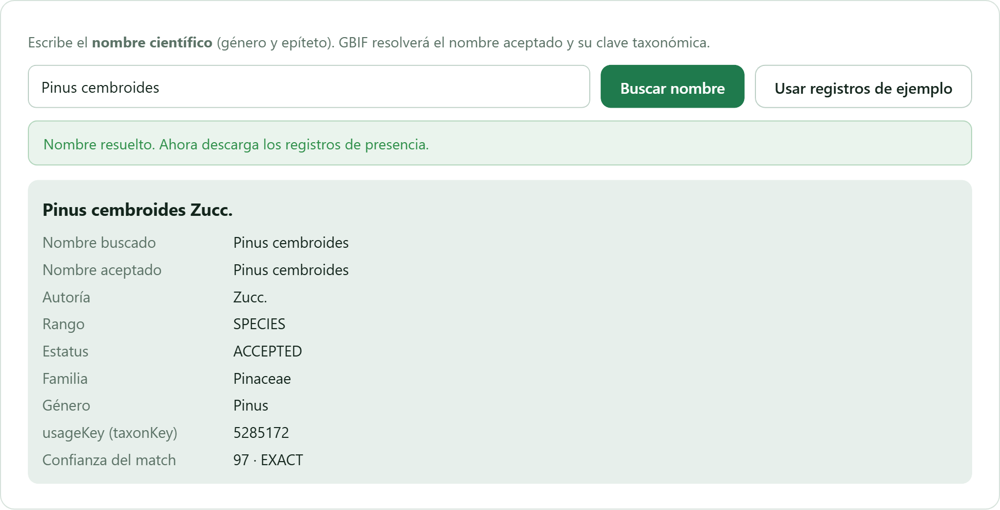
Figura 1.1. El nombre resuelto. La clave 5285172 es lo que se manda a GBIF; el nombre escrito solo sirvió para llegar a ella. El botón Usar registros de ejemplo, a la derecha, carga los 2,400 registros que vienen con el programa sin tocar internet.
Lo que dice
Cómo leerlo
Nombre aceptado
Si es distinto del que escribiste, escribiste un sinónimo. No es un error: GBIF te lleva al nombre válido y los registros publicados con el sinónimo vienen incluidos.
Rango
SPECIES, SUBSPECIES, VARIETY… Si buscas una subespecie, solo llegarán sus registros; si buscas la especie, puedes incluir o excluir los infraespecíficos al descargar.
Estatus
ACCEPTED es lo que quieres ver. SYNONYM o DOUBTFUL piden una revisión taxonómica antes de seguir.
Confianza
Qué tan seguro está GBIF de haber entendido el nombre, con el tipo de coincidencia (EXACT, FUZZY…). Una coincidencia difusa con confianza baja suele ser un nombre mal escrito.
iSi la app no encuentra el nombre
Revisa la ortografía y que sea el nombre científico completo (género y epíteto). Los nombres comunes no funcionan: «piñonero» no es un nombre científico y GBIF no lo resolverá. Si el nombre es reciente y aún no está en la taxonomía de GBIF, usa el de la especie a la que pertenecía antes y filtra después por el nombre escrito en el Bloque 2.
1.4Traer los registros
Con el nombre resuelto, la tarjeta de descarga controla qué se pide, de dónde y cuánto. Las tres decisiones viajan dentro de la consulta a GBIF: lo que se excluye aquí no se descarga, y el total que la app anuncia ya viene filtrado.
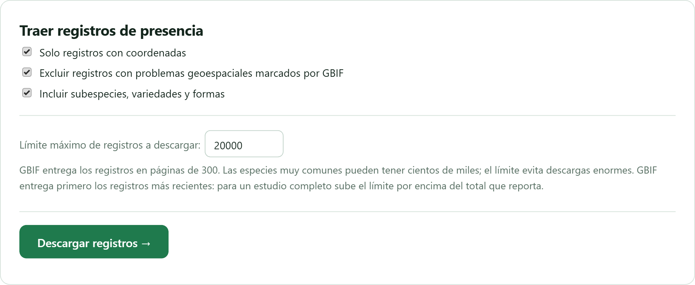
Figura 1.2. Las tres casillas y el tope. La descarga se hace por páginas, con barra de progreso, y se puede detener.
Opción
Qué hace y cuándo cambiarla
Solo registros con coordenadas
Descarta los que no traen punto. Déjala activada: un registro sin coordenadas no sirve para modelar.
Sin problemas geoespaciales
Pide a GBIF que excluya los registros que él mismo marcó con banderas graves de coordenadas. Es un primer filtro barato, pero no sustituye al Bloque 3.
Incluir infraespecíficos
Trae también subespecies y variedades. Actívala si quieres modelar la especie completa o comparar sus subtaxones; desactívala si tu pregunta es solo sobre la especie en sentido estricto.
Países
Pide solo los registros de los países marcados (sección siguiente). Es el filtro que más reduce la descarga.
Máximo de registros
El tope de la descarga. Sirve para no esperar de más mientras exploras.
El filtro de países
Debajo de las casillas está el filtro de países, que no recorta lo descargado: le pide a GBIF, desde el principio, solo los registros de los países que marques. La diferencia es grande cuando la especie es común: el maíz tiene 153,301 registros con coordenadas en el mundo y 51,288 en México. El conteo que anuncia GBIF ya viene filtrado, así que sabes de entrada cuántos vas a traer.
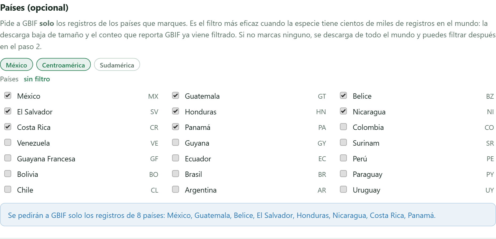
Figura 1.3. Los veintiún países de México, Centroamérica y Sudamérica, con un atajo por región. Los botones funcionan como interruptor, y sin filtro los desmarca todos: sin ninguno marcado se descarga del mundo entero, como siempre.
iCuándo no conviene filtrar por país
Cuando la distribución cruza una frontera hacia fuera de la lista. El piñonero del ejemplo vive también en el suroeste de Estados Unidos: filtrar a México dejaría fuera 670 registros y recortaría el nicho de verdad, no solo el mapa. La regla es la del capítulo 2: el área de estudio se decide por biología, no por comodidad.
!El tope no toma una muestra al azar
GBIF entrega los registros más recientes primero. Si tu especie tiene 20,000 registros y pones un tope de 2,000, no obtendrás 2,000 registros representativos: obtendrás los 2,000 más nuevos, que están sesgados hacia la ciencia ciudadana y hacia las zonas con teléfono y señal. Para un estudio serio, sube el tope por encima del total que reporta la búsqueda y deja que baje todo.
1.5Lo que llega y cómo se ve
Terminada la descarga, la última tarjeta resume lo que hay y muestra las primeras filas. Es el momento de la primera revisión: cuántos son, de qué países, de qué años.
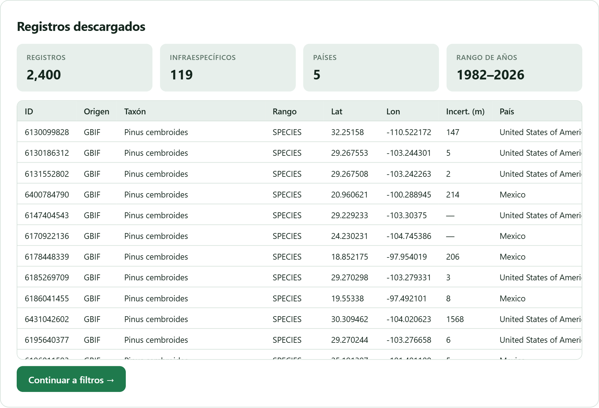
Figura 1.4. El ejemplo recién cargado. La tabla se recorre de lado para ver el resto de los campos. Las cuatro cifras de arriba son la primera prueba de olfato: cinco países para un pino mexicano ya dice que hay algo que revisar.
▸El ejemplo, en números
Los 2,400 registros del piñonero que trae el programa se reparten así: México 1,719, Estados Unidos 670, Nueva Zelanda 8, Francia 2 y Austria 1. Hay siete formas nombradas —la especie, con 2,281 registros, y seis subespecies y variedades— y las fechas van de 1982 a 2026. Por tipo de evidencia: 1,343 observaciones humanas, 967 ejemplares de herbario y 90 de otras clases.
Los once registros europeos y neozelandeses son árboles cultivados en jardines botánicos y arboretos. Son legítimos como registros —esos árboles existen— pero no dicen nada sobre dónde puede vivir la especie por sí sola. Quedarán fuera en el Bloque 2 o en el 3.
1.6Tus propios registros
No todo está en GBIF: los datos de tu propio muestreo, los de una tesis que aún no se publica o los de un herbario local casi nunca lo están. La segunda tarjeta del bloque acepta esos datos y los trata igual que a los de GBIF.
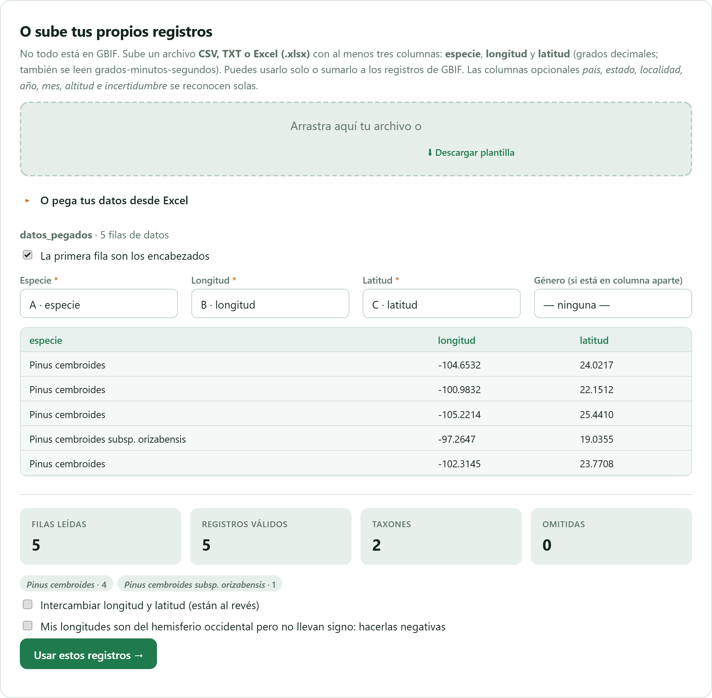
Figura 1.5. Cinco filas pegadas desde una hoja de cálculo. La app reconoció sola las columnas especie, longitud y latitud; si se hubiera equivocado, los tres menús permiten corregirla.
Prepara la tabla. Bastan tres columnas: especie, longitud y latitud. Los encabezados pueden estar en español o en inglés. Si quieres partir de algo, Descargar plantilla da un archivo con las columnas ya puestas.
Súbela o pégala. Arrastra un archivo .csv, .txt o .xlsx, o copia las celdas desde tu hoja de cálculo y pégalas en el cuadro de texto.
Revisa la asignación de columnas. La app propone cuál es cuál; corrígela si hace falta. Las columnas opcionales —país, estado, localidad, año, mes, altitud e incertidumbre— se reconocen solas y se aprovechan en los filtros.
Mira las cuatro tarjetas de filas leídas, registros válidos, taxones y omitidas, y la lista de taxones con su conteo. Si «omitidas» no es cero, alguna fila tenía coordenadas vacías, de texto o fuera de rango.
Pulsa Usar estos registros → y decide si reemplazan a los de GBIF o se suman a ellos.
Si tus datos vienen así…
La app hace esto
Grados, minutos y segundos 24° 01' 18" N, 104° 39' 12" O
Los convierte a grados decimales, con el signo que corresponde al hemisferio.
Coma decimal −104,6532
La entiende como separador decimal.
Longitud y latitud invertidas
Marca la casilla Intercambiar longitud y latitud y se corrigen todas de golpe.
Longitudes sin el signo negativo
La casilla de abajo las hace negativas, que es el caso común en América.
Archivo guardado en Windows con acentos que se ven raros
Reconoce la codificación antigua y repara los acentos.
1.7¿Cuántos registros hacen falta?
La pregunta llega siempre, y la respuesta honesta es: menos de los que se cree, si están bien repartidos. Lo que necesita un modelo no es cantidad de puntos, sino que esos puntos cubran el rango de condiciones en que vive la especie. Cincuenta registros repartidos por toda la sierra enseñan más que quinientos apiñados en dos cañadas.
✓Órdenes de magnitud
Menos de 15
No modeles con algoritmos flexibles. Un modelo de envolvente sencillo y una descripción del ambiente son más honestos.
De 15 a 30
Es posible modelar, con pocas variables (tres o cuatro), modelos sencillos y validación cuidadosa. Los trabajos que han medido el efecto del tamaño de muestra encuentran que ahí empieza a haber resultados aprovechables.
Más de 50
Terreno cómodo para los diez algoritmos y el ensamble del Bloque 9.
Muchos miles
El problema deja de ser el número y pasa a ser el sesgo: adelgazar a una presencia por celda suele mejorar el modelo más que agregar datos.
Son órdenes de magnitud de la literatura, no umbrales oficiales: el número mínimo real depende de cuán estrecho sea el nicho y de cuánta variación ambiental haya en tu región.
1.8Problemas frecuentes
Lo que ves
Qué pasó y qué hacer
«No se pudo conectar con GBIF»
Sin internet, o el servicio no responde. La app funciona igual con el ejemplo incluido o con tus propios archivos; vuelve a intentar la descarga más tarde.
La descarga se corta a la mitad «se perdió la conexión con GBIF»
En descargas de decenas de miles de registros puede caerse la conexión al leer una página. La app reintenta hasta seis veces con esperas crecientes y, si aun así no lo consigue, ofrece un botón para usar los registros que ya llegaron en lugar de perderlos. Con ese conjunto puedes seguir trabajando o volver a intentar la descarga completa más tarde.
Llegan muchos menos registros de los que esperabas
Revisa el tope y las casillas: Solo registros con coordenadas descarta muchos registros de herbario antiguos que nunca se georreferenciaron.
Aparecen países donde la especie no vive
Casi siempre son ejemplares cultivados o errores de coordenada. No los borres a mano: el Bloque 2 los filtra por país y el Bloque 3 los detecta por reglas, y así queda constancia de cuántos fueron.
Todos los registros son de los últimos cinco años
El tope se quedó corto y GBIF entregó solo los más recientes. Súbelo.
Tu archivo se carga pero «registros válidos» es mucho menor que «filas leídas»
Columnas mal asignadas, coordenadas con texto («s/d», «—») o celdas vacías. Corrige la asignación o limpia la hoja y vuelve a cargarla.
Los puntos salen en el océano Índico
Longitud y latitud invertidas, o longitudes sin signo. Las dos casillas del final de la tarjeta lo arreglan.
iAntes de seguir al Bloque 2
Descarga el CSV crudo si vas a trabajar varios días: así no dependes de que GBIF entregue exactamente lo mismo la próxima vez. Los registros descargados quedan también en el informe final, con su fecha y su consulta.
2
Bloque 2 · Qué entra y qué se queda fuera
Filtros: taxón, país, años, recuadro y estados
Aquí se decide el área de estudio y qué registros la representan. Es el bloque que más influye en el resultado final del modelo, y el que menos tiempo suele dedicársele.
2.1Filtrar es decidir el área de estudio
2.2Las cuatro facetas
2.3Filtro por estado o región
2.4Recorte geográfico
2.5El resultado
2.6Cómo elegir el área de estudio
2.7Problemas frecuentes
2.1Filtrar es decidir el área de estudio
Un filtro parece un detalle de comodidad —quitar lo que estorba— pero en modelado de nicho es una decisión de fondo. Los registros que dejes dentro definen qué ambientes cuentan como «ocupados», y el territorio que abarquen definirá de dónde sale el ambiente «disponible» con el que se comparan. Cambiar el área de estudio cambia el modelo, aunque los algoritmos y las variables sean los mismos.
θEl área accesible
En la introducción vimos el diagrama BAM: la M es la parte del mundo que la especie ha podido alcanzar en su historia. Un modelo debería aprender comparando los sitios ocupados contra esa M, no contra un continente entero. Si el área es demasiado grande, el modelo tiene una tarea trivial —distinguir la sierra mexicana de la selva amazónica— y sus medidas de calidad salen infladas. Si es demasiado pequeña, el modelo nunca ve las condiciones que la especie rechaza y no aprende nada. La M razonable suele ser la región biogeográfica donde la especie vive, más un margen.
2.2Las cuatro facetas
La primera tarjeta muestra cuatro grupos de casillas con el conteo de registros de cada categoría. Los cambios se aplican al instante: cada clic recalcula el número de la tarjeta de resultado.
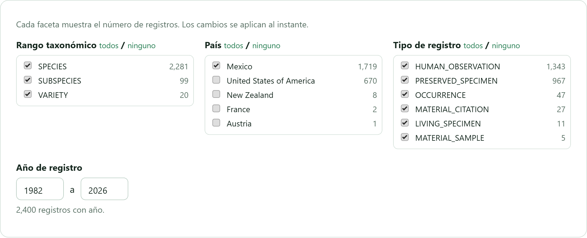
Figura 2.1. Las facetas del ejemplo, con la casilla de México como único país activo. Cada renglón trae su conteo, que se calcula sobre los registros descargados, no sobre los que sobreviven a los otros filtros: así sabes siempre cuánto hay de cada cosa en el conjunto original.
Faceta
Para qué sirve de verdad
Rango taxonómico
Separar la especie de sus subespecies y variedades. Si vas a modelar la especie completa, déjalos todos; si tu pregunta es sobre un subtaxón, quédate solo con él —y revisa que tenga registros suficientes (sección 1.7)—. También sirve para comparar: modelar por separado cada subespecie y ver si ocupan ambientes distintos.
País
La forma más rápida de quitar ejemplares cultivados en otros continentes y de acotar el estudio a un país. Si ya sabías de antemano con qué países ibas a trabajar, conviene filtrarlos en la propia descarga (sección 1.4): aquí se filtra lo que llegó, allá se evita traerlo. Cuidado: si tu especie cruza una frontera —como el piñonero entre México y Estados Unidos— quitar el país vecino recorta el nicho de verdad, no solo el mapa.
Tipo de registro
LIVING_SPECIMEN son plantas vivas en colecciones: jardines botánicos y arboretos. Casi siempre hay que quitarlos. PRESERVED_SPECIMEN son ejemplares de herbario, con identificación revisable pero a veces georreferenciación gruesa; HUMAN_OBSERVATION son observaciones, con coordenada precisa pero identificación variable.
Año
Descartar registros antiguos cuyo sitio pudo cambiar de uso, o quedarse con un periodo que corresponda al clima de tus capas. Si usas WorldClim 2.1, el clima representa 1970–2000: mezclarlo con registros de 1900 es comparar cosas distintas.
2.3Filtro por estado o región
Muchos estudios no son nacionales sino regionales: una sierra, un estado, una cuenca. El programa trae incluidos los 32 estados de México con sus límites, y puede asignarle a cada registro el estado que le toca.
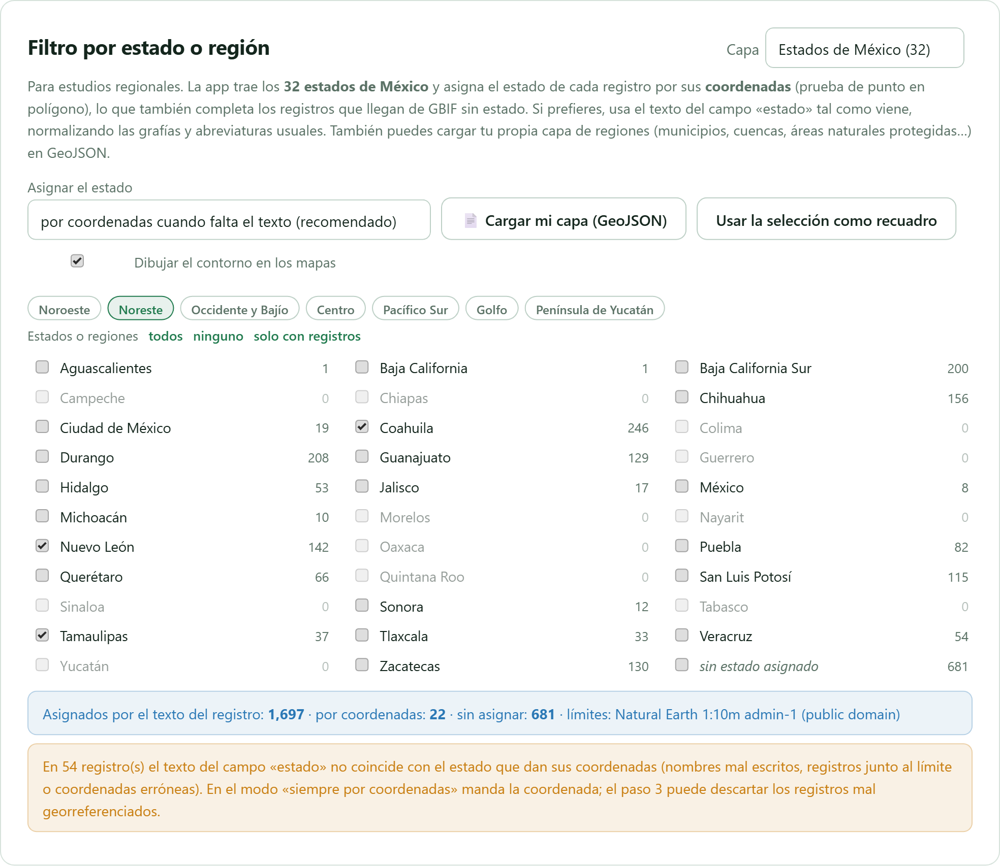
Figura 2.2. El filtro por estado con el grupo Noreste activo: Coahuila, Nuevo León y Tamaulipas. Los estados sin registros salen en gris, y el último renglón reúne los registros a los que no se les pudo asignar ninguno.
De dónde sale el estado de cada registro
GBIF entrega un campo de texto con el estado, pero muchos registros llegan sin él y otros lo traen mal escrito. Por eso hay tres modos:
Modo
Qué hace
por coordenadas cuando falta el texto (recomendado)
Usa el texto del registro cuando lo trae, normalizando grafías y abreviaturas («Edo. de México», «Mexico», «Michoacan» → el mismo estado), y cuando no lo trae decide por la coordenada. Es el que más registros aprovecha.
siempre por coordenadas
Ignora el texto y usa solo la prueba de punto en polígono. Útil cuando sospechas que el campo de texto es poco confiable.
solo con el texto del registro
Se queda con lo que dice el publicador. Sirve para auditar los datos, no para modelar.
▸El ejemplo, estado por estado
Con los 2,400 registros del piñonero: 1,697 recibieron su estado del texto del registro, 22 lo recibieron de sus coordenadas —son registros mexicanos que GBIF entregó sin estado— y 681 quedaron sin asignar, que son exactamente los 670 de Estados Unidos y los 11 de Europa y Nueva Zelanda: no hay ningún registro mexicano sin estado.
Los estados con más registros son Coahuila (246), Durango (208), Baja California Sur (200), Chihuahua (156), Nuevo León (142) y Zacatecas (130): la Sierra Madre Occidental, la Oriental y la sierra de La Laguna, que es donde vive el piñonero.
!Cuando el texto y la coordenada no coinciden
En el ejemplo hay 54 registros donde el estado escrito no es el estado en el que cae la coordenada. Las causas son tres: nombres mal escritos o de municipios tomados por estados, registros justo en el límite entre dos estados —donde un error de 200 m cambia la respuesta— y coordenadas francamente equivocadas. La app lo avisa y no decide por ti: en el modo recomendado manda el texto, en el modo por coordenadas manda la coordenada, y los registros mal georreferenciados se atacan en el Bloque 3.
Atajos y opciones
Los botones de grupo —Noroeste, Noreste, Occidente y Bajío, Centro, Pacífico Sur, Golfo, Península de Yucatán— marcan de golpe los estados de esa región. Funcionan como interruptor: si el grupo ya estaba completo, un segundo clic lo quita.
todos · ninguno · solo con registros son los atajos de la lista. El último deja marcados nada más los estados que tienen al menos un registro, que es el punto de partida cómodo.
Usar la selección como recuadro convierte los estados elegidos en el rectángulo del recorte geográfico de la sección 2.4, y ese mismo recuadro se propone después como extensión del mapa en el Bloque 9.
Dibujar el contorno en los mapas traza el límite de lo que elegiste sobre los mapas de los bloques 4 y 9, para que se vea de qué región se está hablando.
Cargar mi capa (GeoJSON) sustituye los estados por tus propios polígonos: municipios, cuencas, áreas naturales protegidas, unidades de manejo, ejidos. La app toma el nombre de cada polígono de sus propiedades y arma la lista igual que con los estados.
iDe dónde salen los límites
Los 32 estados vienen de Natural Earth a escala 1:10 millones, que es de dominio público, simplificados para que pesen poco. Son exactos para clasificar registros y para dibujar contornos en un mapa de página, pero no son un límite oficial: no los uses para medir superficies ni para resolver un litigio de linderos.
2.4Recorte geográfico
Cuando la región que te interesa no coincide con ningún estado —una franja altitudinal, una zona de estudio rectangular, el área de un proyecto— está el recorte por coordenadas.
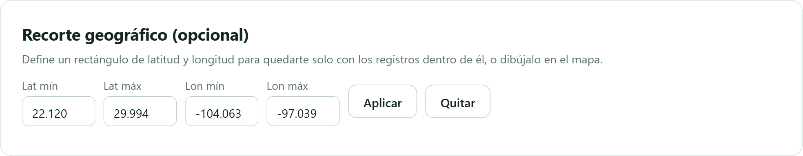
Figura 2.3. Los cuatro números del recuadro, ya llenos con la envolvente de los tres estados del Noreste. Debajo de ellos, la tarjeta trae un mini mapa donde el rectángulo se puede dibujar con el ratón: Dibujar recuadro, arrastrar de esquina a esquina y Aplicar.
El recuadro y el filtro por estados se pueden usar juntos: el recuadro recorta y la selección de estados afina. Si vas a modelar, conviene que el recuadro sea un poco más grande que la distribución conocida, para que el modelo vea también condiciones que la especie no ocupa.
2.5El resultado
La última tarjeta dice cuántos registros sobrevivieron y muestra la tabla con la columna Estado ya rellenada. Ese conjunto es el que pasa al Bloque 3.
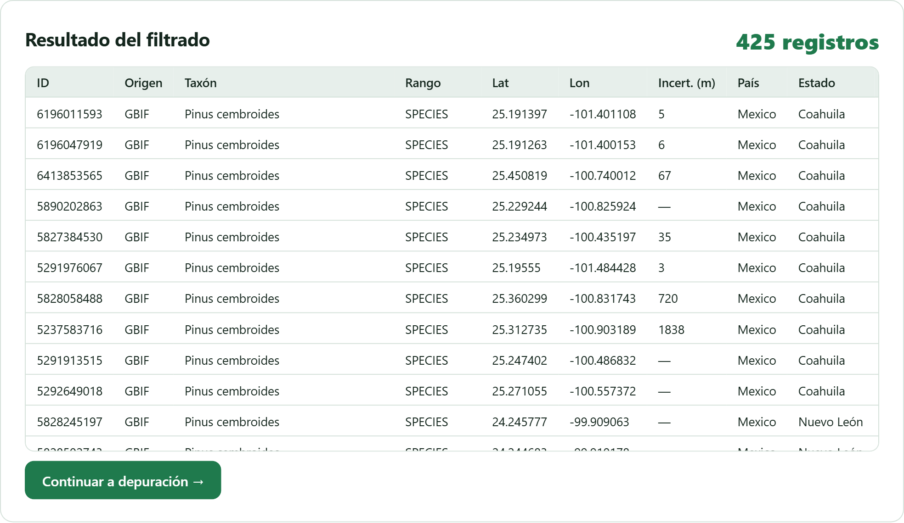
Figura 2.4. El ejemplo reducido a un estudio regional: de 2,400 registros a 425. La columna Estado aparece aunque GBIF no la trajera, porque la asignó la coordenada.
425
El recorrido del ejemplo
2,400 registros descargados → 1,719 al dejar solo México → 425 al quedarse con Coahuila, Nuevo León y Tamaulipas. Cada paso es una decisión que debe quedar escrita en la sección de métodos.
2.6Cómo elegir el área de estudio
No hay una regla única, pero sí un orden de preguntas que funciona:
¿Cuál es la pregunta? Un estudio nacional de una especie pide todo el país; una evaluación de una unidad de manejo pide esa unidad más su entorno; una comparación entre subespecies pide el área de las dos.
¿Hasta dónde ha podido llegar la especie? Ese es el criterio biológico: la región biogeográfica que ocupa, no el rectángulo que cabe en la pantalla. Las barreras —un desierto, un mar, una cordillera— son buenos límites.
¿Está representado el contraste? Dentro del área debe haber sitios con condiciones parecidas a las que ocupa la especie y también sitios claramente distintos. Un área que solo contiene su hábitat impide que el modelo aprenda qué rechaza.
¿Puedo justificarlo en una frase? Si la respuesta es «porque así se veía bien», conviene volver al punto 2.
2.7Problemas frecuentes
Lo que ves
Qué pasó y qué hacer
El conteo no baja al marcar una casilla
Los conteos de las facetas son del conjunto descargado. Si ya habías filtrado por otra faceta, el número de la tarjeta de resultado sí baja, pero el de la casilla no cambia.
Muchos registros «sin estado asignado»
Normal si tu descarga incluye otros países: ningún estado mexicano les corresponde. Si son mexicanos, revisa el modo de asignación: en solo con el texto quedan fuera todos los que GBIF entregó sin ese campo.
Un estado con registros que no esperabas
Puede ser una población real poco conocida, un ejemplar cultivado o una coordenada equivocada. Míralo en el mapa del Bloque 4 antes de decidir.
El recuadro deja fuera registros que querías
Recuerda que la longitud es negativa en América: un recuadro de −104 a −97 no incluye −110. El botón Usar la selección como recuadro evita escribir los números a mano.
Tu GeoJSON se carga pero la lista sale vacía
Los polígonos no traen un nombre reconocible en sus propiedades, o el archivo está en una proyección distinta de latitud-longitud. Guárdalo en coordenadas geográficas (EPSG:4326).
Quedan menos de quince registros
El área es demasiado pequeña para modelar. Amplíala, o baja el objetivo a describir el ambiente de los puntos (bloques 5 y 7) sin ajustar un modelo.
3
Bloque 3 · La higiene de los datos
Depuración de coordenadas
Nueve reglas que buscan los errores típicos de una base de biodiversidad, con su conteo antes de aplicarlas y un reporte de antes y después. Ninguna borra nada sin que tú lo decidas.
3.1Por qué depurar
3.2Las nueve reglas
3.3Los tres parámetros
3.4Reglas informativas
3.5El reporte de antes y después
3.6Lo que la depuración no hace
3.7Qué descargar
3.8Problemas frecuentes
3.1Por qué depurar
Las bases de biodiversidad acumulan dos siglos de trabajo hecho con medios muy distintos: etiquetas manuscritas, localidades escritas de memoria, georreferenciación posterior a partir de un texto, digitalización con prisa. Los errores que resultan no son aleatorios: se repiten con las mismas formas, y por eso se pueden buscar con reglas.
Lo que está en juego no es la estética del mapa. Un registro con la coordenada del centro del país mete en el modelo un clima que la especie nunca ocupó; cincuenta registros duplicados en el mismo árbol le dicen al algoritmo que ese clima es cincuenta veces más importante que los demás; un ejemplar cultivado en un jardín europeo ensancha el nicho hasta volverlo irreconocible.
θLos duplicados pesan
Un modelo de solo presencia aprende del contraste entre dónde hay registros y cómo es el ambiente en general. Si un sitio aparece cincuenta veces —porque cincuenta personas fotografiaron el mismo árbol junto al mirador— el modelo entiende que ese ambiente es cincuenta veces más frecuente de lo que es. Quitar duplicados no es limpieza cosmética: es evitar que el esfuerzo de muestreo se disfrace de preferencia ecológica.
3.2Las nueve reglas
Cada regla se activa o se desactiva por separado y muestra cuántos registros marcaría antes de que apliques nada. Ese conteo en vivo es la parte útil: ver que una regla marca 400 registros te obliga a entender por qué antes de borrarlos.
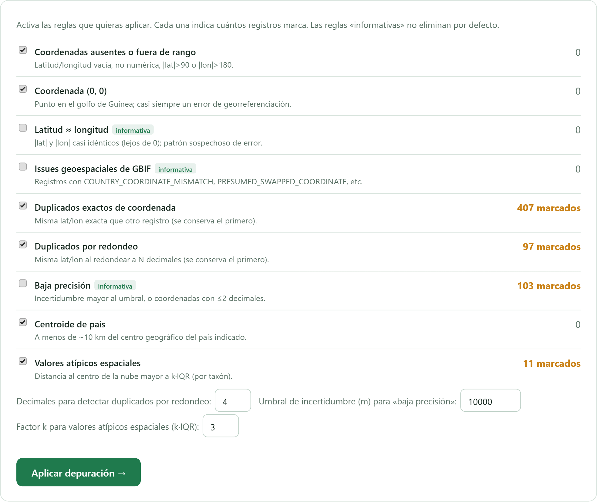
Figura 3.1. Las nueve reglas con los conteos del ejemplo. Las tres marcadas como informativa vienen apagadas: señalan registros sospechosos sin eliminarlos.
Regla
Qué busca y cuándo desactivarla
Coordenadas ausentes o fuera de rango
Latitud o longitud vacía, con texto, o imposible (|lat| > 90, |lon| > 180). No hay razón para desactivarla.
Coordenada (0, 0)
El «punto nulo» en el golfo de Guinea, que aparece cuando un programa escribe ceros en lugar de dejar el campo vacío.
Latitud ≈ longitud
Los dos valores casi idénticos y lejos de cero: el patrón que deja copiar una celda sobre la otra. Como puede ocurrir de verdad en una franja diagonal del planeta, la app la deja como informativa.
Issues geoespaciales de GBIF
Las banderas del propio GBIF: país que no concuerda con la coordenada, coordenada presuntamente intercambiada, y otras. Informativa, porque algunas banderas son inofensivas.
Duplicados exactos de coordenada
Registros con la misma latitud y longitud, hasta el último decimal. Conserva el primero. Es la regla que más registros suele quitar.
Duplicados por redondeo
Registros que coinciden al redondear a N decimales: el mismo árbol registrado con precisiones distintas. Con 4 decimales, «el mismo sitio» son unos 11 m.
Baja precisión
Incertidumbre declarada mayor al umbral, o coordenadas con dos decimales o menos —que ya son más de un kilómetro—. Informativa porque su umbral depende de la resolución de tus capas.
Centroide de país
Puntos a menos de unos 10 km del centro geográfico del país indicado: la marca clásica del registro georreferenciado «a nivel país».
Valores atípicos espaciales
Registros cuya distancia al centro de la nube de puntos supera k veces el rango intercuartílico, calculado por taxón. Detecta lo que está lejos de donde está todo lo demás.
3.3Los tres parámetros
Parámetro
Qué cambia
Decimales para duplicados por redondeo por omisión 4
Define qué tan cerca es «el mismo sitio»: 4 decimales ≈ 11 m, 3 ≈ 110 m, 2 ≈ 1.1 km. Con capas de 1 km tiene sentido bajar a 2; con capas de 18 km, como las del ejemplo, el adelgazado por celda del Bloque 9 hace mejor ese trabajo.
Umbral de incertidumbre por omisión 10,000 m
A partir de qué incertidumbre declarada un registro se considera de baja precisión. Una regla sensata: que el umbral no sea mayor que el tamaño de celda de tus capas.
Factor k de atípicos por omisión 3
Cuántos rangos intercuartílicos de distancia se toleran. Bajarlo a 1.5 marca mucho más —y empieza a marcar poblaciones reales—; subirlo a 5 deja pasar casi todo.
3.4Reglas informativas: marcar sin borrar
Tres reglas vienen apagadas a propósito. No es que importen menos: es que su decisión depende de tu estudio. Un registro con 5 km de incertidumbre es basura para un modelo a 1 km y perfectamente utilizable para uno a 18 km. La app te dice cuántos son y tú decides.
!Nunca borres sin mirar
Un valor atípico espacial puede ser un error… o la población disyunta más interesante de tu estudio. Antes de aplicar la regla, pasa al mapa del Bloque 4 y mira dónde están los puntos marcados. Si son poblaciones reales, desactiva la regla y quita a mano los registros que sí sean errores. El manual insiste: las reglas proponen, el investigador dispone.
3.5El reporte de antes y después
Al pulsar Aplicar depuración → aparece el reporte: cuántos entraron, cuántos quedaron, cuántos se fueron y por cuál regla.
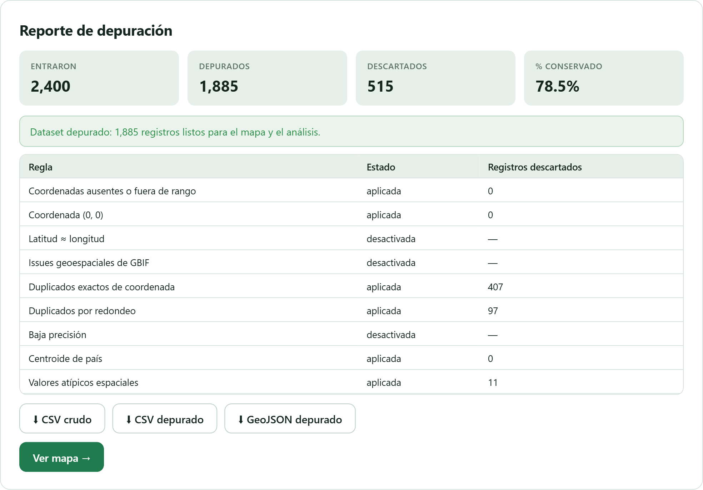
Figura 3.2. El reporte del ejemplo. La tabla es la que hay que copiar a la sección de métodos: dice exactamente qué se aplicó y qué costó cada regla.
▸El ejemplo, regla por regla
Con las reglas de fábrica, los 2,400 registros del piñonero quedan en 1,885 (78.5 % conservado). Los 515 que salen son: 407 duplicados exactos de coordenada, 97 duplicados por redondeo a cuatro decimales y 11 valores atípicos espaciales. Las demás reglas no marcaron nada: no hay coordenadas imposibles, ni (0, 0), ni centroides de país.
Las reglas informativas señalaron además 103 registros de baja precisión, que se conservaron. A 18 km de celda no estorban; con capas de 1 km convendría revisarlos.
▸Los once atípicos, uno por uno
Vale la pena ver quiénes son los 11 registros que quitó la regla de atípicos, porque explican para qué sirve:
Nueve son árboles cultivados fuera de América: seis en Nueva Zelanda, dos en Francia y uno en Austria. La regla los encontró sin saber nada de países ni de cultivos: simplemente están lejísimos del resto de la nube.
Uno está en (23.000, −102.000), grados exactos, en pleno Zacatecas. Es un registro de Pinus cembroides subsp. orizabensis, cuyos otros 65 registros están en Puebla (38), Veracruz (19), Tlaxcala (5), San Luis Potosí (3) y Querétaro (1). Una coordenada de grados redondos, a cientos de kilómetros de su población, es un marcador de posición que alguien nunca corrigió.
El último es otro orizabensis, en el límite de Guanajuato y Querétaro, también fuera del área del subtaxón.
Que la regla trabaje por taxón es lo que permite el segundo hallazgo: (23, −102) está dentro del rango de la especie, pero muy lejos del de su subespecie.
3.6Lo que la depuración no hace
No revisa identificaciones. Si alguien confundió dos pinos, el registro tiene una coordenada perfecta y un nombre equivocado, y ninguna regla geográfica lo detecta. Eso solo se arregla revisando ejemplares o confiando en fuentes.
No corrige el sesgo de muestreo. Quitar duplicados exactos ayuda, pero la acumulación de registros junto a las carreteras sigue ahí. El adelgazado a una presencia por celda se hace en el Bloque 9, y ahí se explica.
No juzga la antigüedad. Si te interesa el clima reciente, filtra por año en el Bloque 2.
No decide por ti. Todo lo que hace queda registrado en la tabla del reporte, y el conjunto crudo sigue disponible para descargar.
3.7Qué descargar
Archivo
Para qué sirve
⬇ CSV crudo
Todo lo descargado, sin filtrar ni depurar. Es tu respaldo: guárdalo junto con la fecha de la consulta.
⬇ CSV depurado
El conjunto con el que trabajarán los bloques siguientes. Es lo que se anexa como material suplementario de un artículo.
⬇ GeoJSON depurado
Los mismos puntos como capa geográfica, para abrirlos en un programa de mapas.
3.8Problemas frecuentes
Lo que ves
Qué pasó y qué hacer
Se va más de la mitad de los registros
Casi siempre son duplicados exactos, y casi siempre está bien. Revisa la tabla del reporte: si el grueso salió por duplicados, tu conjunto tenía muchas observaciones del mismo sitio.
La regla de atípicos marca poblaciones que sabes reales
Sube el factor k, o desactívala y quita a mano lo que sí sea error. Con especies de distribución disyunta —las de sierras aisladas— conviene revisarla siempre.
Todos los conteos son cero
Tus datos ya venían limpios, o estás depurando un conjunto propio pequeño. No es un error.
Quedan menos registros de los que necesitas
Vuelve al Bloque 2 y amplía el área o el periodo antes de bajar la exigencia de la depuración.
Quiero saber cuáles se fueron
Descarga el CSV crudo y el depurado y compáralos por el identificador del registro: la diferencia son los descartados.
iPara la sección de métodos
Una frase basta, y con estos datos se escribe sola: «De los 2,400 registros descargados de GBIF se eliminaron 407 duplicados exactos de coordenada, 97 duplicados a cuatro decimales y 11 valores atípicos espaciales (k = 3, por taxón), para un conjunto final de 1,885 registros».
4
Bloque 4 · Ver para creer
El mapa de registros y el estudio de mapas
El primer mapa sirve para dos cosas distintas: revisar los datos con los ojos, y producir la figura que acabará en el artículo. El estudio de mapas hace las dos, y exporta a la resolución y al formato que pida la revista.
4.1El mapa como control de calidad
4.2Lo que muestra el mapa
4.3El estudio de mapas
4.4Exportar para publicar
4.5La vista previa y el recorte
4.6Qué necesita un mapa publicable
4.7Problemas frecuentes
4.1El mapa como control de calidad
Ninguna regla automática ve lo que ve un ojo entrenado en treinta segundos de mapa. Antes de extraer una sola variable ambiental, conviene mirar los puntos y hacerse cinco preguntas.
¿Hay puntos en el mar? Una coordenada en el océano, a pocos kilómetros de la costa, casi siempre es un registro costero mal georreferenciado; lejos de la costa, es un error de signo o de transcripción.
¿La distribución tiene la forma que esperas? El piñonero debe dibujar las dos Sierras Madre. Si aparece una nube uniforme sobre el altiplano, algo está mal.
¿Hay alineaciones sospechosas? Puntos en fila sobre una carretera son registros de camino: legítimos, pero muestran dónde se colecta, no dónde vive la especie.
¿Hay un punto solitario muy lejos? Un jardín botánico, un ejemplar cultivado, o —a veces— el hallazgo más interesante del estudio.
¿Los subtaxones están donde deben? Colorear por taxón revela de un vistazo una subespecie en el lugar equivocado.
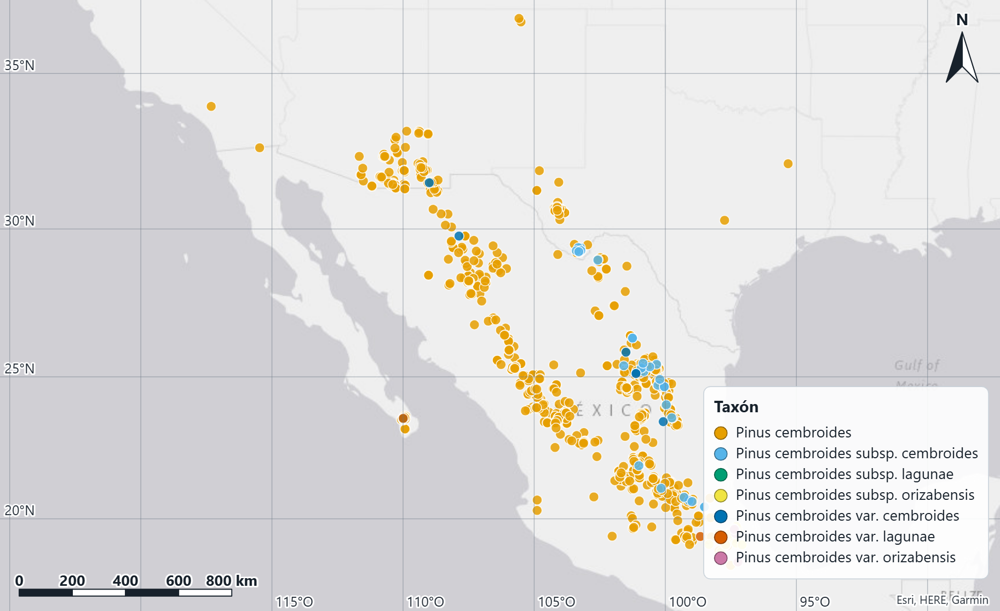
Figura 4.1. Los 1,885 registros depurados del ejemplo, exportados con el estudio de mapas. Se ven las dos Sierras Madre, la sierra de La Laguna en Baja California Sur y la población del centro; los colores separan la especie de sus subespecies y variedades. Esta imagen salió tal cual de la app, sin retoques.
4.2Lo que muestra el mapa
El mapa dibuja los registros que sobrevivieron al Bloque 3, coloreados por el criterio que elijas: por taxón, por estado, o por el grupo que asignen después los análisis del Bloque 8. Sobre él se pueden encender los elementos cartográficos —leyenda, escala, rosa de los vientos, retícula— y el contorno de la región que hayas elegido en el Bloque 2.
iEl mapa base viene de internet
Las teselas del fondo se descargan de un servicio en línea. Sin conexión, el mapa muestra los puntos sobre un fondo liso —que sigue siendo perfectamente utilizable— y la escala y las coordenadas siguen funcionando. Si una capa base no responde, la app cambia sola a otra.
4.3El estudio de mapas
Debajo del mapa está el estudio de mapa, plegado hasta que lo necesitas. Sus siete pestañas cubren todo lo que distingue un mapa de pantalla de una figura publicable.
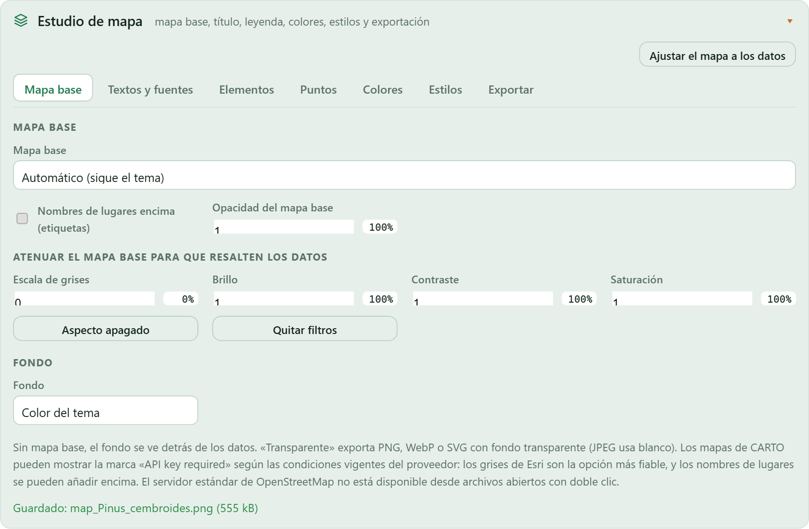
Figura 4.2. El estudio abierto en Mapa base. Catorce fondos distintos, y cuatro controles para atenuarlo: en un mapa científico el fondo debe ayudar a ubicarse, no competir con los datos.
Pestaña
Qué controla
Mapa base
El fondo: grises, calles, topográfico, relieve, satélite o ninguno; su opacidad y su atenuación en gris, brillo, contraste y saturación. El botón Aspecto apagado deja el fondo discreto de un solo clic.
Textos y fuentes
Título, subtítulo y crédito, y la tipografía de cada elemento por separado: el título, los rótulos de la leyenda, los números de la escala, las coordenadas de la retícula y la letra del norte, cada uno con su tamaño, negrita, cursiva y color.
Elementos
Qué se dibuja: leyenda (dentro o fuera del mapa, en una o varias columnas), barra de escala, rosa de los vientos, retícula de coordenadas y marco.
Puntos
Forma, tamaño, borde y transparencia de los símbolos, y el mapa de calor cuando los puntos se amontonan.
Colores
La paleta de los taxones o de los grupos, y las rampas de color para los mapas continuos del Bloque 9.
Estilos
Presets listos y la posibilidad de guardar tu estilo como archivo para reutilizarlo en otra figura o en otro estudio.
Exportar
Encuadre, tamaño, resolución, formato, recorte y vista previa: la sección 4.4.
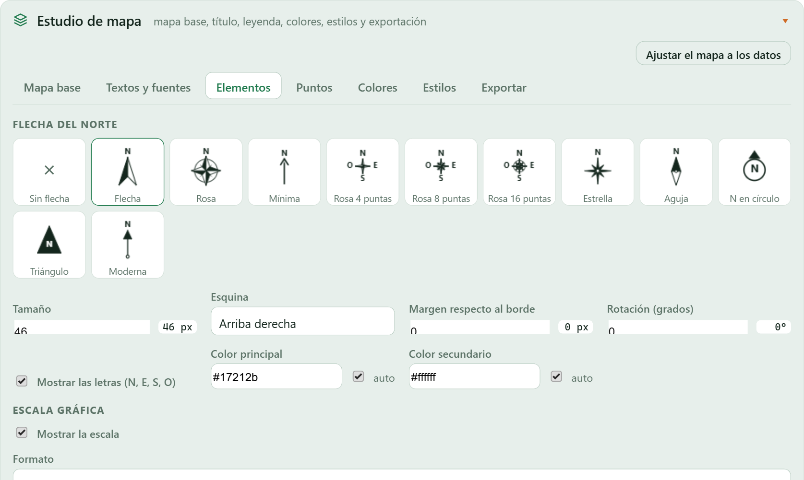
Figura 4.3. La pestaña Elementos: cada pieza cartográfica se enciende, se coloca y se dimensiona por separado. La rosa de los vientos y la barra de escala tienen varios formatos.
4.4Exportar para publicar
La pestaña Exportar responde a las tres preguntas de cualquier revista: qué se ve, de qué tamaño y en qué formato.
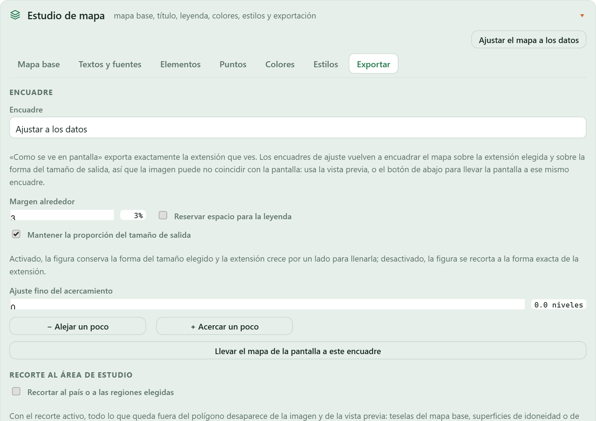
Figura 4.4. El encuadre decide qué parte del mundo entra en la figura. Como se ve en pantalla exporta exactamente lo que ves; los demás encuadres vuelven a componer el mapa sobre la extensión elegida.
Control
Opciones y para qué
Encuadre
Como se ve en pantalla, Ajustar a los datos, Ajustar a los estados o regiones elegidos, México completo y Extensión manual con las cuatro coordenadas. Con el margen y el ajuste fino se afina el resultado sin tocar el mapa de la pantalla.
Tamaño
Como se ve, A4 horizontal o vertical, una o dos columnas de revista (85 y 180 mm), diapositiva 16:9, cuadrado o un tamaño escrito a mano en milímetros.
Resolución
Un multiplicador para el tamaño de pantalla, o 150, 300 y 600 dpi cuando el tamaño está en milímetros. La mayoría de las revistas pide 300 dpi para figuras de medio tono y 600 para líneas.
Formato
PNG (sin pérdida, admite fondo transparente), JPEG, WebP, TIFF, GeoTIFF georreferenciado y SVG —vectorial, con los datos y los textos, pero sin el mapa base—.
θQué formato pedir para qué
PNG para un documento o una presentación. TIFF cuando la revista lo exija o cuando vayas a seguir editando el mapa en un programa de diseño. GeoTIFF si quieres abrir la imagen en un programa de mapas y que caiga en su lugar sobre el mundo: lleva dentro las coordenadas y el sistema de referencia. SVG cuando quieras cambiar después los textos o los colores sin perder nitidez; como no incluye el mapa base, sirve sobre todo para figuras de puntos sobre fondo liso.
4.5La vista previa y el recorte
Dos funciones evitan el vaivén de exportar, mirar el archivo, corregir y volver a exportar.
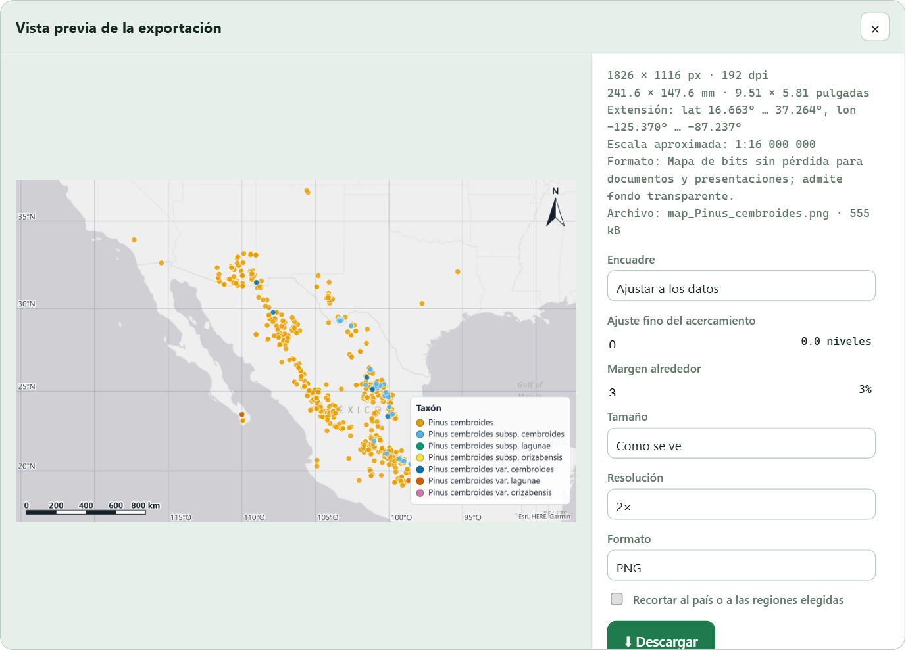
Figura 4.5. La vista previa muestra la imagen que se va a guardar, no una aproximación, junto con su tamaño en píxeles y en milímetros, su resolución, su extensión geográfica y su escala aproximada. Los controles de la derecha cambian la imagen sin cerrar la ventana.
El recorte al área de estudio deja fuera de la imagen todo lo que no sea el país o las regiones elegidas en el Bloque 2: las teselas del fondo, las superficies de idoneidad y los puntos de fuera desaparecen, y queda solo la silueta del territorio, con su contorno dibujado y el exterior transparente o del color que elijas. Es la forma de entregar un mapa de México —o de un estado— sin que se asome el país vecino.
1:16M
Dato clave
La vista previa calcula la escala aproximada de la figura a partir de su ancho en milímetros y de la extensión que abarca. Es el número que pide el pie de figura de un mapa, y el que casi nadie recuerda calcular.
4.6Qué necesita un mapa publicable
Elemento
Por qué
Barra de escala
Sin ella no se juzga ninguna distancia. Mejor una barra que un texto «1:16 000 000»: la barra sigue siendo válida si la figura se reduce.
Indicador de norte
Imprescindible cuando el mapa no está orientado con el norte arriba, y buena costumbre siempre.
Coordenadas
La retícula con sus grados permite situar cualquier punto y comparar con otros mapas.
Leyenda
Qué significa cada color y cada símbolo, con los nombres científicos en cursiva.
Crédito del mapa base
Los proveedores de teselas exigen su atribución; la app la escribe sola en la esquina y se exporta con la imagen. En el pie de figura va además la fuente de los registros, cuántos son y de qué fecha.
4.7Problemas frecuentes
Lo que ves
Qué pasó y qué hacer
El mapa aparece con el mundo entero
Se dibujó antes de que su espacio tuviera tamaño. Pulsa Ajustar el mapa a los datos, en la esquina del estudio.
El fondo sale gris, sin detalle o con una marca de agua
No hay conexión, el proveedor no respondió, o pone su marca según sus condiciones de uso. Cambia de capa base —los grises son la más fiable— o usa Ninguno: para una figura de puntos, el fondo liso suele bastar.
La imagen no coincide con la pantalla
El encuadre no es Como se ve en pantalla. Abre la vista previa, o usa Llevar el mapa de la pantalla a este encuadre.
Las letras salen diminutas en la figura
Al exportar a un tamaño de papel, el texto se dimensiona con la figura. Sube el tamaño de letra de cada elemento en Textos y fuentes y vuelve a ver la vista previa.
Los puntos se amontonan y no se distingue nada
Baja el tamaño del símbolo, súbele transparencia, o cambia a mapa de calor en la pestaña Puntos.
5
Bloque 5 · El ambiente de cada punto
Variables ambientales: clima, altitud, Köppen y suelo
Aquí los puntos dejan de ser coordenadas y se convierten en una tabla de condiciones: diecinueve variables bioclimáticas, la altitud, el tipo de clima y, si lo pides, el suelo. Esa tabla es la materia prima de todo lo que sigue.
5.1Qué son las variables bioclimáticas
5.2Tres formas de cargar las capas
5.3Cómo se extrae el valor de un punto
5.4Köppen-Geiger y tipo de suelo
5.5El resultado
5.6El mapa temático
5.7Los extremos delatan
5.8Qué resolución usar
5.9Problemas frecuentes
5.1Qué son las variables bioclimáticas
Las diecinueve variables bioclimáticas no son datos crudos: son resúmenes calculados a partir de las series mensuales de temperatura y de lluvia, pensados para tener sentido biológico. No dicen cuánto llovió un día, sino cuánto llueve en el trimestre más seco, o cuánto cae la temperatura en el mes más frío: las cosas que limitan a una planta.
Clave
Qué mide
Unidad
BIO1
Temperatura media anual
°C
BIO2
Rango diurno medio de temperatura
°C
BIO3
Isotermalidad (BIO2 / BIO7 × 100)
%
BIO4
Estacionalidad de la temperatura (desviación estándar × 100)
°C×100
BIO5
Temperatura máxima del mes más cálido
°C
BIO6
Temperatura mínima del mes más frío
°C
BIO7
Rango anual de temperatura (BIO5 − BIO6)
°C
BIO8
Temperatura media del trimestre más húmedo
°C
BIO9
Temperatura media del trimestre más seco
°C
BIO10
Temperatura media del trimestre más cálido
°C
BIO11
Temperatura media del trimestre más frío
°C
BIO12
Precipitación anual
mm
BIO13
Precipitación del mes más húmedo
mm
BIO14
Precipitación del mes más seco
mm
BIO15
Estacionalidad de la precipitación (coeficiente de variación)
%
BIO16
Precipitación del trimestre más húmedo
mm
BIO17
Precipitación del trimestre más seco
mm
BIO18
Precipitación del trimestre más cálido
mm
BIO19
Precipitación del trimestre más frío
mm
ELEV
Altitud sobre el nivel del mar
m
θPor qué se repiten entre sí
Las diecinueve salen de las mismas doce temperaturas y las mismas doce lluvias mensuales. BIO1 y BIO11, o BIO12 y BIO16, miden casi lo mismo en la mayor parte del mundo. Meterlas todas en un modelo no aporta información nueva y sí provoca colinealidad: por eso existe el Bloque 6, que es el que decide con cuáles quedarse.
5.2Tres formas de cargar las capas
La app no descarga capas por ti: los archivos de clima pesan cientos de megabytes y se distribuyen con sus propias condiciones. Lo que hace es leerlos de tu disco sin subirlos a ningún lado.
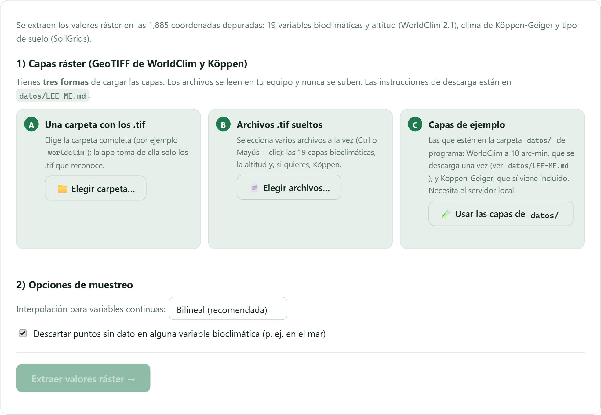
Figura 5.1. Las tres formas de cargar las capas, cada una con su propio botón y su propio aviso de estado, para que nunca haya duda de cuál se usó.
Forma
Cuándo conviene
📁 Elegir carpeta…
Tienes descomprimida la carpeta de WorldClim. Eliges la carpeta completa y la app toma de ella solo los archivos que reconoce. Es lo más cómodo para un estudio real.
📄 Elegir archivos…
Tus capas están repartidas o quieres cargar solo algunas. Se seleccionan varias a la vez con Ctrl o Mayús.
🧪 Usar las capas de ejemplo
Para aprender o para probar: las capas incluidas en el programa, a 10 minutos de arco, recortadas a México y el suroeste de Estados Unidos. No requieren descargar nada.
iQué nombres reconoce
La app identifica las capas por su nombre de archivo, con el patrón de WorldClim: wc2.1_res_bio_1.tif … bio_19.tif y elev.tif. Si tus archivos tienen otro nombre, basta renombrarlos con ese patrón. El apéndice A recoge las reglas completas.
5.3Cómo se extrae el valor de un punto
Para cada registro y cada capa, la app convierte la coordenada en fila y columna de la malla y lee el valor. Dos detalles importan:
Solo lee la ventana que necesita. Un archivo de 30 segundos de arco tiene miles de millones de celdas; la app abre el archivo, calcula dónde caen tus puntos y lee únicamente esos pedazos. Por eso funciona en el navegador con capas que no cabrían en la memoria.
El muestreo se elige en Opciones de muestreo.Bilineal (recomendada) promedia las cuatro celdas vecinas ponderando por distancia, lo que evita los saltos bruscos entre celdas contiguas; Vecino más cercano devuelve el valor de la celda tal cual. La interpolación se aplica solo a las variables continuas: las categóricas, como Köppen, se leen siempre por vecino más cercano, porque promediar códigos de clima no significa nada.
Cuando un punto cae en una celda sin dato —el mar, o fuera del recorte de tus capas— la variable queda vacía. La casilla Descartar puntos sin dato en alguna variable bioclimática, activada de fábrica, los deja fuera de la tabla; si la desactivas, se conservan con huecos y cada análisis decidirá qué hacer con ellos.
5.4Köppen-Geiger y tipo de suelo
Dos variables categóricas completan el cuadro. La clasificación de Köppen-Geiger resume el clima en una etiqueta —árido de estepa frío, templado con invierno seco…— que se entiende de inmediato y que se usa mucho en ecología descriptiva. Es una capa más, en un archivo pequeño, y se carga igual que las demás.
Figura 5.2. El tipo de suelo se consulta en línea, punto por punto y con pausas. Es la única función de la app que envía coordenadas a un servicio externo, y por eso está separada y es opcional.
!El suelo tarda
El servicio público de suelos limita cuántas consultas por segundo acepta, así que la app pregunta despacio: con cientos de puntos, la consulta puede tardar varios minutos, y se puede detener y reanudar. Para un modelo con muchos registros conviene decidir primero si el suelo es realmente necesario: en la mayoría de los estudios de nicho climático no lo es.
5.5El resultado
La extracción produce la tabla que alimenta todo lo demás: una fila por registro, una columna por variable.
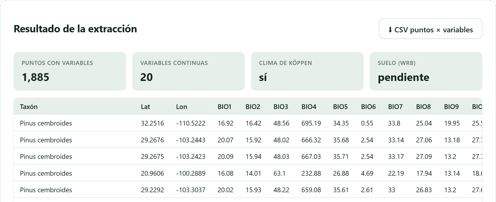
Figura 5.3. El ejemplo: 1,885 puntos con 20 variables continuas y el clima de Köppen. El botón de descarga entrega la tabla completa en CSV, que es el archivo que se anexa a un artículo o se abre en otro programa.
▸El ambiente del piñonero, en tres números
Con los 1,885 registros depurados del ejemplo, la mitad central de los puntos —del primer al tercer cuartil— vive así:
Temperatura media anual entre 14.8 y 17.9 °C, con mediana de 16.2 °C (extremos 2.6 y 22.7).
Precipitación anual entre 414 y 551 mm, con mediana de 486 mm (extremos 69 y 2,098).
Altitud entre 1,473 y 2,210 m, con mediana de 1,978 m (extremos 27 y 3,065).
Y por tipo de clima: 1,272 registros en clima árido de estepa frío (BSk), 227 en templado con invierno seco y verano templado (Cwb), 186 en árido de estepa cálido (BSh), 95 en árido desértico cálido (BWh) y 71 en templado sin estación seca (Cfb). El retrato es el de un pino de montaña semiárida y fresca.
5.6El mapa temático
La última tarjeta pinta los puntos según el valor de la variable que elijas. Es la manera más rápida de ver si una variable tiene estructura geográfica —y si el gradiente que muestra tiene sentido.
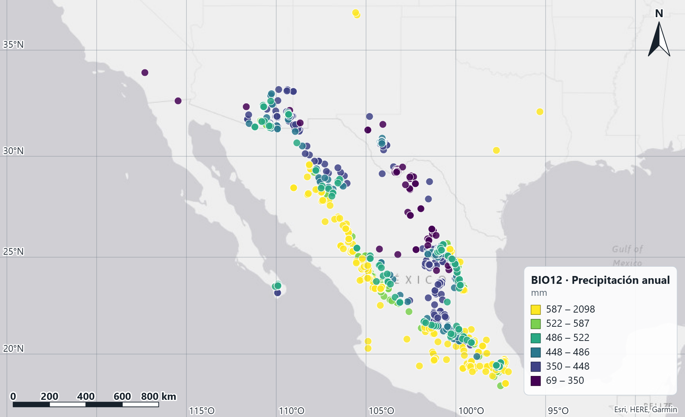
Figura 5.4. Los registros coloreados por BIO12, precipitación anual, en seis clases. Se ve el contraste entre la Sierra Madre Occidental, con sus valores intermedios, y los puntos más secos del altiplano y del norte. El mapa se edita y se exporta con el mismo estudio del capítulo 4.
5.7Los extremos delatan
Antes de seguir, mira los valores mínimos y máximos de dos o tres variables. Es un control de calidad gratuito: el ambiente denuncia registros que la geografía no pudo denunciar.
▸Tres extremos del ejemplo
El registro más bajo está a 27 m de altitud, en el valle de Mexicali, con 69 mm de lluvia anual. Un pino de sierra no vive en el desierto a nivel del mar: es un árbol plantado o una coordenada equivocada.
Dos registros en Texas, a 143 y 169 m, con 1,096 y 849 mm de lluvia: zonas urbanas del este del estado, muy lejos de las condiciones del resto.
El más lluvioso llega a 2,098 mm en el centro de Veracruz, a 689 m. Otra vez, un valor que pide revisión.
Ninguno de los tres había sido marcado por las reglas geográficas del Bloque 3, porque están dentro del área de distribución general. Aparecen al mirar el ambiente. Se pueden quitar volviendo al Bloque 2 con un filtro, o dejarlos y anotar la decisión.
5.8Qué resolución usar
Resolución
Celda
Cuándo
30 segundos
≈ 1 km
Estudios locales o de montaña, donde el relieve cambia el clima en pocos kilómetros. Los archivos son enormes: conviene recortarlos antes.
2.5 minutos
≈ 4.6 km
El punto medio razonable para un estudio estatal o regional.
5 minutos
≈ 9 km
Estudios nacionales con registros de precisión desigual.
10 minutos
≈ 18 km
Estudios continentales, exploración rápida y ejemplos de enseñanza —es la resolución de las capas incluidas—.
La regla práctica: la celda no debería ser más fina que la precisión de tus coordenadas. Con registros georreferenciados a 5 km, una capa de 1 km da una falsa sensación de detalle.
5.9Problemas frecuentes
Lo que ves
Qué pasó y qué hacer
«No se reconoció ninguna capa»
Los nombres de archivo no siguen el patrón esperado, o elegiste una carpeta que no contiene los .tif. Renómbralos o entra a la subcarpeta correcta.
Muchos puntos sin dato
Tus capas no cubren toda el área de los registros —el caso típico de una capa recortada— o los puntos caen en el mar. Compara la extensión de las capas con la de tus datos.
La extracción tarda mucho
Normal con capas de 30 segundos y miles de puntos: se leen 20 archivos grandes. La barra de progreso avanza por capa.
Los valores de temperatura parecen multiplicados
Algunas distribuciones antiguas guardan la temperatura en décimas de grado. Si BIO1 sale en 162 en lugar de 16.2, tus capas son de ese tipo.
El suelo se queda a medias
El servicio limitó las consultas. Pulsa de nuevo: continúa donde se quedó y conserva lo ya consultado.
Köppen sale vacío
Falta la capa de Köppen-Geiger, que es un archivo aparte, o quedó fuera de la selección de archivos.
El botón de continuar al Bloque 6 avisa en vez de avanzar
Todavía no has pulsado Extraer valores ráster →. La correlación se calcula sobre esa tabla, así que primero hay que crearla; al terminar la extracción quedan disponibles también los bloques 7, 8 y 9.
6
Bloque 6 · Menos variables, mejor modelo
Correlación y selección de variables
Las diecinueve variables bioclimáticas dicen muchas veces lo mismo. Este bloque muestra cuánto se repiten, calcula el VIF en vivo y propone un puñado de variables poco redundantes —sin quitarte las que tú consideres imprescindibles—.
6.1Qué es la colinealidad y qué rompe
6.2La matriz de correlación
6.3El factor de inflación de la varianza
6.4La selección recomendada
6.5Fijar las variables que importan
6.6El visor de pares
6.7¿Cuántas variables usar?
6.8Problemas frecuentes
6.1Qué es la colinealidad y qué rompe
Dos variables son colineales cuando una se puede predecir bien a partir de la otra. En datos climáticos es la norma, no la excepción: donde hace más calor suele llover distinto, y donde sube la altitud baja la temperatura. El problema no es que exista, sino lo que provoca cuando se ignora.
Qué rompe
Cómo se nota
La importancia de las variables
Si BIO5 y BIO10 miden casi lo mismo, el modelo reparte el crédito entre las dos y ninguna parece importante. Con una sola, esa variable aparece como determinante. La conclusión ecológica cambia sin que cambien los datos.
Los coeficientes
En modelos lineales —GLM, GAM— los coeficientes se vuelven inestables: cambian de signo y de magnitud al quitar un puñado de registros. Los modelos de árboles lo toleran mejor, pero su medida de importancia sigue sufriendo.
La proyección a otro clima
Es el daño más serio y el menos visible. Un modelo ajustado con dos variables correlacionadas aprende la relación que existe hoy entre ellas; si en el escenario futuro esa relación cambia, el modelo extrapola sobre combinaciones que nunca vio.
6.2La matriz de correlación
La matriz muestra la correlación entre cada par de variables, calculada con los valores extraídos en tus registros —no con el clima de todo el país—: lo que importa es cómo se relacionan donde vive tu especie.
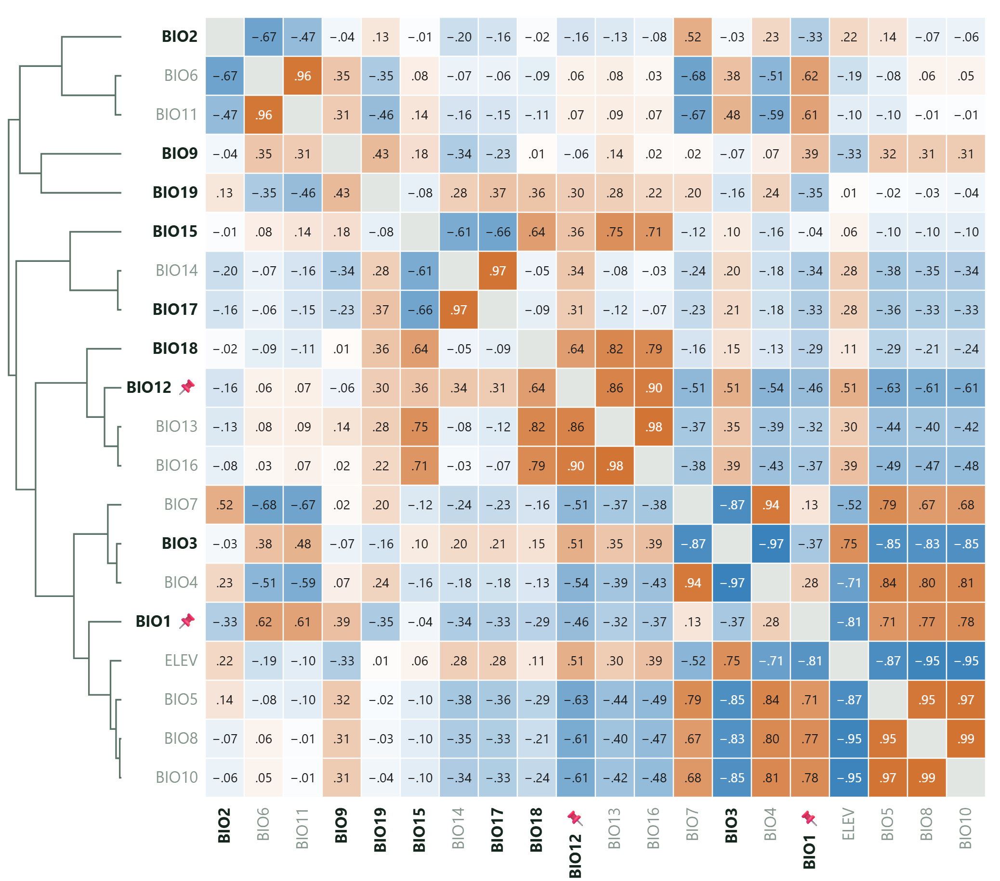
Figura 6.1. La matriz del ejemplo, exportada con el botón ⬇ PNG de la propia tarjeta. El árbol de la izquierda agrupa las variables que se parecen: BIO6 y BIO11 (0.96), BIO14 y BIO17 (0.97), BIO13 y BIO16 (0.98), BIO8 y BIO10 (0.99). En negrita, las variables seleccionadas; con alfiler 📌, las fijadas.
Pearson o Spearman. Pearson mide relación lineal; Spearman mide si una crece cuando la otra crece, aunque la relación sea curva. Con variables climáticas suelen dar lo mismo; cuando difieren mucho, hay una relación no lineal que conviene mirar.
El orden no es alfabético. Las filas y columnas se ordenan por agrupamiento jerárquico, así que los bloques de color que aparecen son grupos reales de variables intercambiables.
Haz clic en una celda y se abre el par: dos histogramas y un diagrama de dispersión para decidir con cuál quedarte.
6.3El factor de inflación de la varianza
θQué es el VIF
La correlación mira pares; el VIF mira conjuntos. Para cada variable se hace una regresión de esa variable contra todas las demás del conjunto y se calcula VIF = 1 / (1 − R²). Si las demás explican el 90 % de su variación, el VIF vale 10. Un VIF alto significa que esa variable es casi una combinación de las otras, aunque no tenga ninguna correlación pareja alta: ese es el caso que la matriz por sí sola no detecta.
Los umbrales 5 y 10 son convenciones de lectura muy extendidas, no leyes: por debajo de 5 la colinealidad es baja; entre 5 y 10, moderada; arriba de 10, alta.
En la tabla de variables, el VIF y la correlación máxima se recalculan con las variables que tienes marcadas cada vez que marcas o desmarcas una. Así se ve el efecto de cada decisión al instante, y la columna Estado dice por qué se descartó cada variable: por una correlación pareja alta o por su VIF.
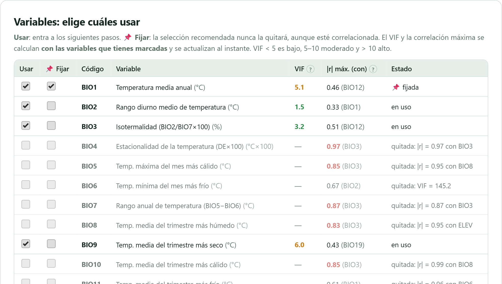
Figura 6.2. La tabla de variables. BIO4 salió por su correlación de 0.97 con BIO3; BIO6 salió por un VIF de 145.2, aunque su correlación pareja más alta era apenas 0.67: es el caso que solo el VIF descubre.
6.4La selección recomendada
El botón ✨ Selección recomendada aplica un procedimiento sencillo y transparente: quita primero las variables que superan el umbral de correlación —conservando de cada par la que aporta más información al resto— y después, sobre lo que queda, elimina una por una las que superan el umbral de VIF, recalculando cada vez. Las variables fijadas no se tocan nunca.
Los dos umbrales son tuyos: |r| viene en 0.8 y el VIF en 10, que son las convenciones más usadas en la literatura de modelado de nicho. Bajarlos deja menos variables y más independientes; subirlos, lo contrario.
6.5Fijar las variables que importan
Un procedimiento automático no sabe ecología. Si tu especie está limitada por la helada, BIO6 tiene que estar en el modelo aunque el algoritmo prefiera otra; si vas a discutir la temperatura media y la lluvia anual, BIO1 y BIO12 no pueden faltar. Para eso está el alfiler: fijar una variable la vuelve intocable.
▸Con y sin alfileres
Con los 1,885 registros del piñonero y los umbrales de fábrica (|r| > 0.8, VIF > 10), la selección automática deja ocho variables: BIO2, BIO3, BIO9, BIO16, BIO17, BIO18, BIO19 y la altitud, con |r| máximo de 0.79 y VIF máximo de 6.1. Ni BIO1 ni BIO12 sobreviven: el procedimiento prefirió a sus parientes.
Al pulsar 📌 Fijar BIO1 y BIO12 y recalcular, la selección pasa a nueve variables —BIO1, BIO2, BIO3, BIO9, BIO12, BIO15, BIO17, BIO18 y BIO19— con |r| máximo de 0.66 y VIF máximo de 8.7. Es decir: exigir las dos variables clásicas bajó la correlación máxima del conjunto, a cambio de una variable más y un VIF algo mayor. Un resultado mejor y además interpretable.
!Decide una vez, y que se note
La selección de este bloque es la que usan por omisión los bloques 7, 8 y 9: el botón Las del paso 6 aparece en todos ellos. Si más adelante cambias de opinión, vuelve aquí y recalcula; no dejes dos selecciones distintas en el mismo trabajo.
6.6El visor de pares
La última tarjeta lista los pares que superan el umbral, del más correlacionado al menos, y permite abrir cualquiera para ver la nube de puntos.
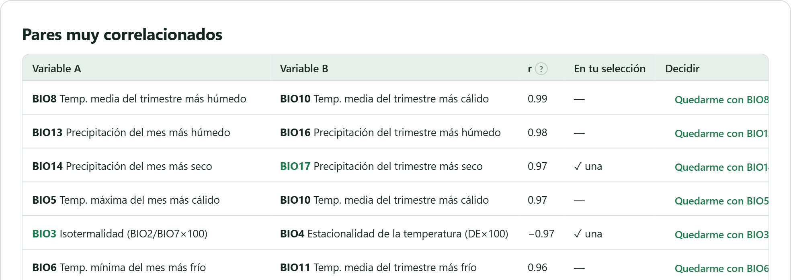
Figura 6.3. Los pares por encima del umbral. Ver la nube evita dos errores: descartar una variable por una correlación alta que en realidad produce un solo grupo de puntos extremos, y conservar dos variables cuya relación es una recta perfecta.
6.7¿Cuántas variables usar?
✓Tres criterios, en este orden
Que tengan sentido
Cada variable del modelo debería poder justificarse en una frase de la discusión: por qué esa y no otra limita a tu especie.
Que no se repitan
|r| por debajo de 0.8 entre todas y VIF por debajo de 10; si puedes bajar a 0.7 y 5 sin perder variables con sentido, mejor.
Que no sean demasiadas
Con pocas presencias, un modelo con muchas variables se aprende los datos de memoria. Una guía prudente es no pasar de una variable por cada diez presencias.
Entre cinco y diez variables bien elegidas basta para casi cualquier estudio de nicho; diecinueve nunca hacen falta.
6.8Problemas frecuentes
Lo que ves
Qué pasó y qué hacer
La matriz sale vacía
No hay tabla de variables: vuelve al Bloque 5 y extrae los valores ráster.
Un VIF enorme, de cientos
Es lo normal con las diecinueve bioclimáticas juntas; significa que esa variable es casi una combinación exacta de otras. Aplica la selección recomendada.
La selección deja fuera «mi» variable
Fíjala con el alfiler y recalcula. Es exactamente para eso.
Pearson y Spearman dan resultados muy distintos
La relación entre esas variables no es lineal. Ábrela en el visor de pares antes de decidir.
Quedan muy pocas variables
Sube un poco los umbrales, o fija las que necesites. Tres variables con sentido ecológico modelan mejor que diez redundantes.
Cambié la selección y los resultados de otro bloque no cambiaron
Los bloques 7, 8 y 9 toman la selección al entrar o al pulsar Las del paso 6. Vuelve a ese bloque y recarga la selección.
7
Bloque 7 · Conocer los datos
Estadística descriptiva y estudio de figuras
Antes de modelar hay que saber cómo son los datos: en qué rango vive la especie, si las distribuciones tienen una o dos modas, si hace falta transformar. Todas las figuras se dibujan como vectores y se editan hasta el último detalle.
7.1Describir antes de modelar
7.2La tabla descriptiva
7.3Histogramas y densidad
7.4El detalle de una variable
7.5Las pruebas de normalidad
7.6Transformaciones sugeridas
7.7El estudio de figuras
7.8Problemas frecuentes
7.1Describir antes de modelar
Este bloque no ajusta ningún modelo: describe. Y sin embargo es el que más veces cambia el rumbo de un estudio, porque es donde se descubre que una variable tiene dos modas, que otra está dominada por un puñado de valores extremos, o que el rango de temperatura que ocupa la especie es más estrecho de lo que se creía.
Es también el primer bloque que usa el motor de cálculo: al pulsar Ejecutar análisis estadístico → la app carga Python dentro del navegador. La primera vez tarda; después es inmediato.
7.2La tabla descriptiva
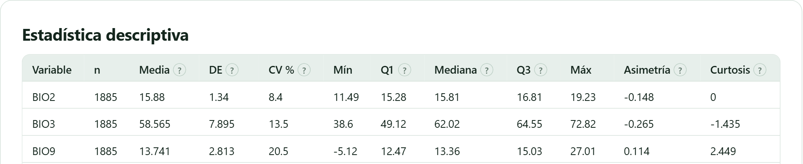
Figura 7.1. Las once medidas de cada variable. Cada encabezado lleva su botón de ayuda con la fórmula, la escala de lectura y la advertencia del error más común.
Medida
Cómo se lee
Media y mediana
Si se parecen, la distribución es simétrica; si la media es mucho mayor, hay una cola larga a la derecha. Para describir el ambiente de una especie suele ser más honesta la mediana.
Desviación estándar
La dispersión en las unidades de la variable. Es la que hay que reportar junto a la media.
Coeficiente de variación
La dispersión relativa, en porcentaje. Cuidado: solo tiene sentido en escalas con cero absoluto —lluvia, altitud—. En temperaturas en grados Celsius el cero es arbitrario y el CV no significa nada: los mismos datos en kelvin dan otro número.
Cuartiles
Q1 y Q3 encierran la mitad central de los datos. Es el intervalo que conviene citar al describir el ambiente de una especie.
Asimetría
Cero es simétrica; positiva, cola a la derecha. Valores entre −0.5 y 0.5 se consideran aproximadamente simétricos, y arriba de 1 en valor absoluto, fuertemente asimétricos: es una convención de lectura, no una prueba.
Curtosis
El peso de las colas respecto a una normal (0 = normal). No tiene escala aceptada de «alta» o «baja»: se usa para comparar variables entre sí, no contra un umbral.
▸Tres variables del ejemplo
De las ocho variables que el Bloque 6 seleccionó para el piñonero: el rango diurno de temperatura (BIO2) tiene media 15.9 °C y desviación 1.3, con asimetría casi nula; la isotermalidad (BIO3) tiene media 58.6 % y una curtosis de −1.44, señal de una distribución aplanada, con dos grupos; la temperatura del trimestre más seco (BIO9) tiene curtosis +2.45, es decir colas pesadas: unos pocos sitios muy fríos y muy cálidos.
7.3Histogramas y densidad
La rejilla de histogramas muestra todas las variables de un vistazo, cada una con su curva de densidad. Es la figura que responde a la pregunta que ninguna tabla contesta: ¿qué forma tiene la distribución?
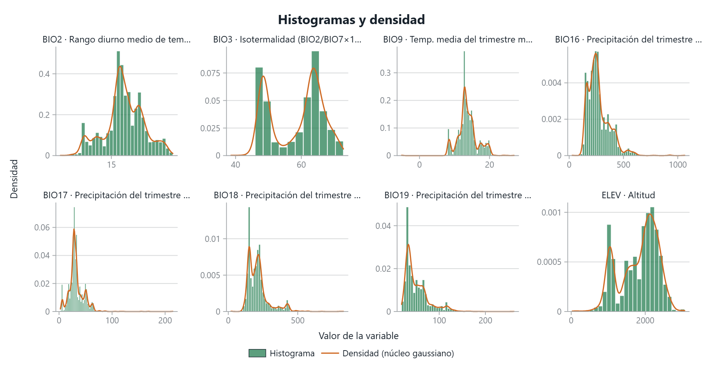
Figura 7.2. Las ocho variables seleccionadas. La isotermalidad (BIO3) y la altitud son claramente bimodales: dos grupos de sitios con condiciones distintas, que en el Bloque 8 se verán como grupos en la ordenación. Las variables de lluvia tienen la cola larga a la derecha típica de la precipitación.
7.4El detalle de una variable
Al elegir una variable, la app dibuja cinco figuras de ella: histograma con la normal ajustada, caja, violín, gráfico Q–Q y distribución acumulada empírica.
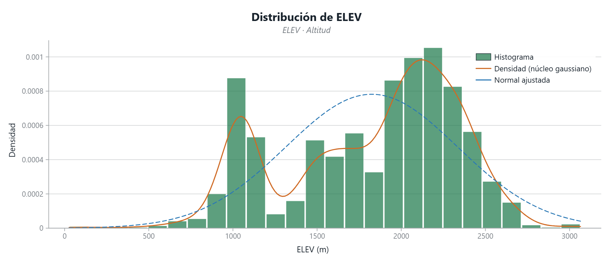
Figura 7.3. La altitud de los 1,885 registros. La curva azul es la normal ajustada con la misma media y desviación: no se parece en nada a los datos, que tienen un grupo cerca de 1,000 m y otro, mayor, cerca de 2,100 m.
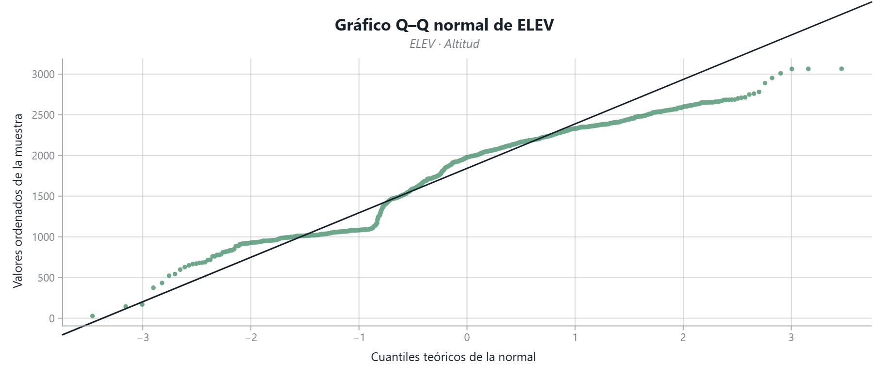
Figura 7.4. El mismo dato en un gráfico Q–Q. Si la variable fuera normal, los puntos seguirían la recta. El escalón del centro es la firma de una distribución con dos modas, y las desviaciones de los extremos, la de unas colas más cortas que las de la normal.
θDos modas suelen ser dos poblaciones
Una variable ambiental con dos modas casi siempre significa que los registros vienen de dos conjuntos de sitios distintos: dos sistemas montañosos, dos subespecies, o una población natural y otra cultivada. No es un defecto de los datos: es información. En el piñonero, la altitud separa las poblaciones de la Sierra Madre Occidental y del altiplano, más altas, de las del noreste y de Baja California Sur, más bajas.
7.5Las pruebas de normalidad
La app aplica cinco pruebas —Shapiro-Wilk, D'Agostino-Pearson, Anderson-Darling, Jarque-Bera y Kolmogorov-Smirnov— y resume con un veredicto por mayoría.
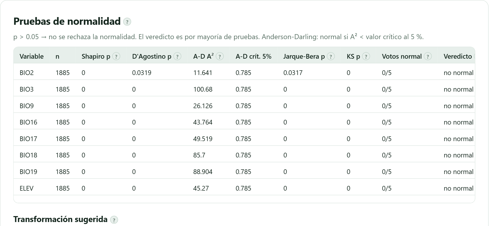
Figura 7.5. Las cinco pruebas para las ocho variables del ejemplo: ninguna variable pasa ninguna prueba (0 de 5 votos). Con 1,885 registros, ese resultado era casi inevitable.
!Con muchos datos, todo sale «no normal»
Las pruebas de normalidad contestan «¿puedo descartar que estos datos vengan de una normal?». Con 50 datos hace falta una desviación grande para descartarla; con 1,885, una desviación mínima —y siempre la hay— basta para que el valor p sea cero. Por eso el resultado de la figura 7.5 no dice que los datos sean raros: dice que la muestra es grande.
Qué hacer: mirar la forma en el histograma y el Q–Q, que sí distinguen «ligeramente asimétrica» de «dos modas», y recordar que ninguno de los algoritmos del Bloque 9 exige normalidad. La normalidad importa para pruebas paramétricas clásicas, no para MaxEnt ni para un bosque aleatorio.
7.6Transformaciones sugeridas
La última tabla prueba transformaciones —logaritmo, raíz, Box-Cox, Yeo-Johnson— y dice si mejoran la simetría y el valor p. Es útil cuando el siguiente paso es un método sensible a la forma, como el análisis de componentes principales o un modelo lineal.
En el ejemplo, las transformaciones logran mejorar la asimetría —BIO2 pasa de −0.148 a −0.002 con Box-Cox— pero el veredicto sigue siendo «marginal»: con esta cantidad de datos, ninguna transformación va a conseguir que las pruebas den normalidad. Otra razón para no obsesionarse con ella.
7.7El estudio de figuras
Cada figura de este bloque trae debajo su propio estudio, con la misma filosofía que el de los mapas: lo que se ve en pantalla es lo que se exporta, y todo es editable.
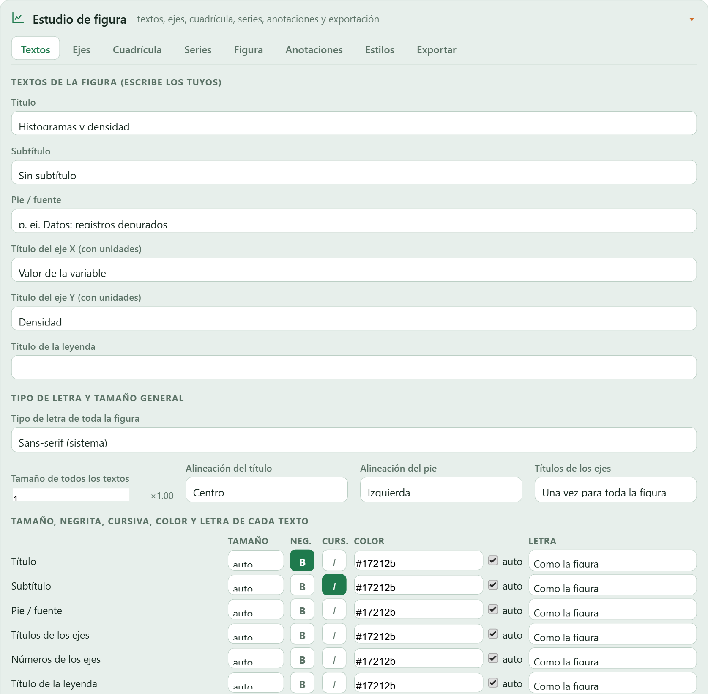
Figura 7.6. El estudio de figura, con la pestaña de textos abierta: título, subtítulo, rótulos de los ejes y leyenda, cada uno con su tipografía, tamaño, grosor y color.
Pestaña
Qué controla
Textos
Título, subtítulo, rótulos de ejes, leyenda y notas, con su tipografía completa.
Ejes
Límites, marcas, formato de los números, escala logarítmica, orientación de las etiquetas.
Cuadrícula
Líneas de referencia, su color y su grosor, y el marco de la figura.
Series
Colores, transparencia, grosor de línea y tamaño de punto de cada serie.
Tipo
Las opciones propias de cada figura: número de clases del histograma, ancho del violín, puntos del Q–Q…
Anotaciones
Textos, flechas y líneas que quieras añadir sobre la figura.
Estilos
Presets y guardado del estilo como archivo, para aplicar el mismo aspecto a todas las figuras del artículo.
Exportar
SVG, PNG, JPEG o WebP; tamaño de pantalla, A4, una o dos columnas de revista o diapositiva; 150, 300 o 600 dpi.
iLas figuras de este manual
Las figuras 7.2, 7.3 y 7.4 se exportaron con ese estudio, sin retocarlas después. Cualquier lector puede reproducirlas con los datos incluidos en el programa.
7.8Problemas frecuentes
Lo que ves
Qué pasó y qué hacer
«Cargando el motor de cálculo…» tarda mucho
Es la primera vez: se descarga Python y sus bibliotecas. Con una conexión lenta puede tomar un par de minutos; después queda en memoria.
Todas las variables salen «no normal»
Con muestras grandes es lo esperado (sección 7.5). No es un problema de tus datos ni impide modelar.
Un histograma con una sola barra altísima
Unos pocos valores extremos estiran el eje. Míralos: suelen ser los mismos registros sospechosos del Bloque 5.
El CV sale enorme o negativo
Estás mirando una variable en grados Celsius con media cercana a cero. El CV no aplica ahí.
Los nombres de las variables salen en el idioma equivocado
Cambia el idioma en la barra superior: las figuras se redibujan solas con los nombres traducidos.
Quiero la misma figura para todas las variables
Guarda el estilo en la pestaña Estilos y cárgalo en las demás figuras.
8
Bloque 8 · La estructura de los datos
Multivariado, ecología y diversidad
Cuatro familias de métodos sobre la misma tabla: ordenación, agrupamiento, métricas del área de distribución y del nicho, y diversidad. Todo lo que se puede decir de una especie antes de ajustar un modelo de distribución.
8.1Qué hace este bloque
8.2Análisis de componentes principales
8.3Agrupamiento
8.4Análisis de correspondencias
8.5El área de distribución
8.6Amplitud y solapamiento de nicho
8.7Diversidad
8.8Problemas frecuentes
8.1Qué hace este bloque
Hasta aquí cada variable se miró por separado. Este bloque las mira juntas: qué ejes de variación ambiental existen, si los registros forman grupos, qué tan grande es el área que ocupan y cuánta variedad hay dentro de ella. Todo se calcula sobre la tabla del Bloque 5, con las variables que eligió el Bloque 6, y empieza pulsando Preparar datos →, que estandariza cada variable a media cero y desviación uno —indispensable cuando se mezclan milímetros con grados y con metros—.
8.2Análisis de componentes principales
θLa idea del ACP
Con ocho variables correlacionadas, los registros no llenan un espacio de ocho dimensiones: se apiñan cerca de una superficie de menos dimensiones. El ACP busca los ejes de esa superficie —combinaciones de las variables originales— ordenados por la cantidad de variación que capturan. El primero resume todo lo que se pueda con una sola cifra; el segundo, lo más que quede, y así.
Figura 8.1. El gráfico de sedimentación del ejemplo. Los cuatro primeros componentes superan el criterio de Kaiser (valor propio > 1) y reúnen el 83 % de la variación; los dos primeros, el 52.5 %.
Figura 8.2. El círculo de correlación. Las flechas largas —BIO16, la altitud, BIO3 y BIO18— son las variables bien representadas en el plano; el color es la calidad de representación (cos²). Dos flechas juntas indican variables que dicen lo mismo; opuestas, variables que se contraponen.
▸Qué significan los dos primeros ejes
En el ejemplo, la dimensión 1 (29.9 % de la varianza) está construida sobre BIO16 —lluvia del trimestre más húmedo— con 27.4 % de contribución, la altitud con 25.5 %, la isotermalidad con 22.9 % y BIO18 con 17.4 %: es un eje de humedad y altura. La dimensión 2 (22.5 %) la forman BIO9 (25.1 %) y BIO19 (25.0 %), temperatura y lluvia del trimestre más seco: un eje de condiciones de la estación seca. Entre los dos ordenan la mitad de la variación ambiental de la especie.
Figura 8.3. Los 1,885 registros proyectados en ese plano. Cada punto es un sitio; la nube muestra si hay grupos, colas o registros alejados —que suelen ser los mismos que llamaron la atención en el Bloque 5—.
8.3Agrupamiento
La pregunta del agrupamiento es si los registros se reparten en conjuntos con ambiente distinto. La app la contesta en tres pasos, y conviene hacerlos en orden.
¿Hay tendencia a agruparse? El estadístico de Hopkins compara la distribución de los datos con una distribución al azar. Por convención, un valor arriba de 0.75 indica tendencia clara a agruparse; alrededor de 0.5, ninguna.
¿Cuántos grupos? Los métodos del codo, la silueta media y el estadístico gap proponen un número. Rara vez coinciden: se elige con criterio, mirando también si los grupos tienen sentido geográfico.
Ejecutar el agrupamiento con el algoritmo elegido —jerárquico con distintos enlaces, k-medias, PAM, difuso, mezcla de gaussianas o DBSCAN— y validarlo.
Figura 8.4. Los tres grupos del ejemplo sobre el plano del ACP. Un agrupamiento útil se ve así: grupos que ocupan zonas distintas del plano, aunque se toquen en los bordes.
Medida de validación
Cómo se lee
Silueta media
De −1 a 1. Por convención: arriba de 0.7 estructura fuerte, de 0.5 a 0.7 razonable, de 0.25 a 0.5 débil, por debajo sin estructura real. En el ejemplo vale 0.422: grupos débiles pero reconocibles, que es lo habitual con datos ambientales continuos.
Índice de Dunn
Cuanto mayor, mejor separados. No tiene escala aceptada: sirve para comparar particiones del mismo conjunto, no para juzgar una sola.
Correlación cofenética
Solo para el agrupamiento jerárquico: qué tan fielmente el dendrograma representa las distancias originales. Arriba de 0.8 se considera buena; en el ejemplo, 0.662.
!Los grupos no son subespecies
Un grupo ambiental reúne sitios con clima parecido, no linajes. Puede coincidir con una subespecie —y entonces es un resultado interesante— o cruzarla por completo. Antes de darle nombre biológico a un grupo, mira dónde cae en el mapa y qué taxones contiene: la app permite colorear el mapa del Bloque 4 por grupo.
8.4Análisis de correspondencias
Mientras el ACP trabaja con variables continuas, el análisis de correspondencias trabaja con tablas de conteos: taxón × tipo de clima de Köppen, taxón × estado, grupo × clase de suelo. Responde a preguntas del tipo «¿qué subespecie está asociada a qué clima?», y las dibuja en un mapa donde la cercanía entre una fila y una columna significa asociación.
Con el ejemplo, la tabla taxón × Köppen confirma lo que ya sugería el Bloque 5: la especie en sentido amplio se concentra en el clima árido de estepa frío, mientras los infrataxones del centro-oriente aparecen asociados a los climas templados con invierno seco.
8.5El área de distribución
Tres medidas describen el área que ocupa la especie, y las tres se usan en evaluaciones de riesgo.
Figura 8.5. Las métricas del área en el ejemplo. La app calcula el área de ocupación a cuatro tamaños de celda y marca cuál es el de las listas rojas, porque el número depende por completo de la celda que se elija.
Métrica
Qué es y cómo se lee
Extensión de la presencia (EOO)
El área del polígono convexo mínimo que envuelve todos los registros. Mide la amplitud geográfica, no el hábitat ocupado: incluye ciudades, mares y desiertos que hay entre las poblaciones. En el ejemplo, 2,797,094 km².
Área de ocupación (AOO)
La suma del área de las celdas que contienen al menos un registro. En el ejemplo: 1,258 km² con celdas de 1 km, 4,304 km² con celdas de 2 km —el tamaño que usan las listas rojas—, 13,952 km² con 4 km y 59,200 km² con 10 km.
Vecino más cercano (R)
El índice de Clark y Evans: 1 significa distribución al azar, menos de 1 agregada, más de 1 regular. En el ejemplo vale 0.210 con Z = −65.7: fuertemente agregada.
!Dos advertencias antes de citar estos números
El AOO depende del muestreo tanto como de la especie. Una especie bien colectada tiene más celdas ocupadas que una igual de extendida pero poco colectada. Los umbrales de las listas rojas (AOO < 2,000 km², EOO < 20,000 km² para «vulnerable») están pensados para inventarios completos, y un umbral por sí solo no asigna una categoría: los criterios exigen además fragmentación, declive o fluctuación.
La agregación también mide esfuerzo. Un R de 0.21 dice que los puntos están muy amontonados, pero parte de ese amontonamiento son colectas repetidas junto a carreteras y en sierras bien estudiadas. Depurar duplicados (Bloque 3) mejora la estimación; eliminarla del todo es imposible con datos de herbario.
8.6Amplitud y solapamiento de nicho
La amplitud de nicho de Levins mide, variable por variable, si la especie usa un rango estrecho o amplio de condiciones respecto al disponible; su versión estandarizada va de 0 a 1 y permite comparar variables entre sí. El solapamiento —D de Schoener e I de Hellinger, también de 0 a 1— compara el nicho de dos taxones o de dos grupos: cuánto comparten del espacio ambiental.
Figura 8.6. El nicho en el espacio ambiental. Cuando hay dos o más taxones con registros suficientes, la app calcula además el solapamiento entre sus nubes.
8.7Diversidad
La última sección aplica el instrumental clásico de diversidad de comunidades —Shannon, Simpson, números de Hill, rarefacción, diversidad beta— a la tabla de registros, tomando como «sitios» celdas de una rejilla, bandas de altitud, estados o los grupos del agrupamiento.
!Lee esto antes de interpretar nada
En una colección de registros de presencia, el número de registros de un taxón mide esfuerzo de muestreo, no abundancia. Una especie con 800 registros no es más abundante que una con 80: puede estar mejor colectada, ser más llamativa o vivir junto a una carretera. Los índices de diversidad se calcularon para comunidades muestreadas con esfuerzo comparable, y aquí se aplican a datos que no cumplen ese supuesto.
Sirven, con dos condiciones: que compares sitios con esfuerzo parecido —o que uses rarefacción para igualarlo—, y que digas en el texto qué estás midiendo. Con los datos del ejemplo, lo que se mide es la diversidad de infrataxones del piñonero, no la de una comunidad vegetal.
▸El ejemplo, con 31 sitios
Con celdas de rejilla como sitios, el ejemplo da 31 sitios × 7 taxones y 1,867 registros. La riqueza observada del conjunto es 7, la estimada por Chao1 también 7.0 y la cobertura de muestra 99.95 %: se colectó prácticamente todo lo que había que colectar, lo cual era previsible porque los «taxones» son los infrataxones descritos de una sola especie.
El índice de Shannon del conjunto es 0.231 y el de Simpson (1 − D) 0.083: valores muy bajos, porque un taxón —la especie en sentido estricto, con 2,281 de los registros originales— domina por completo. En una comunidad vegetal real esos números indicarían un problema; aquí describen exactamente la situación.
Figura 8.7. Rarefacción por individuos. Cada curva dice cuántos taxones se habrían encontrado con m registros: así se comparan sitios con esfuerzo desigual. La parte punteada es extrapolación, y la banda, el intervalo de confianza. La curva negra es el conjunto completo.
Figura 8.8. La curva de rango-abundancia. Una caída muy pronunciada, como esta, es la firma de un conjunto dominado por un solo taxón.
La app calcula además la diversidad beta entre sitios —Jaccard, Sørensen, Bray-Curtis y Morisita-Horn— con la partición en recambio y anidamiento, y ordena los sitios por composición con PCoA y NMDS. Todas las tablas y figuras se descargan en CSV y en imagen.
8.8Problemas frecuentes
Lo que ves
Qué pasó y qué hacer
«Prepara los datos primero»
Los métodos de este bloque necesitan la matriz estandarizada. Pulsa Preparar datos → arriba del todo.
El ACP no separa nada
Si los dos primeros ejes reúnen poca varianza, las variables no están muy correlacionadas: es un resultado, no un error. Mira más dimensiones en la tabla de valores propios.
La silueta es baja en todos los k
Los datos son un continuo, no grupos. Es frecuente con variables climáticas. Informa la silueta y no fuerces una partición.
El AOO cambia muchísimo con la celda
Es esperado y hay que decirlo: reporta siempre el tamaño de celda junto al número, y usa 2 km si vas a comparar con criterios de listas rojas.
Shannon sale casi cero
Un taxón domina. Con registros de una sola especie y sus infrataxones, eso es lo normal.
La rarefacción de un sitio es una línea plana
Ese sitio tiene un solo taxón: no hay nada que rarefactar.
9
Bloque 9 · El modelo
Modelado de la distribución y proyección al futuro
Diez algoritmos y un ensamble, validación por bloques espaciales, umbrales, importancia de variables, curvas de respuesta, mapas y proyección a escenarios de clima futuro con su mapa de extrapolación.
9.1Qué ajusta este bloque
9.2Preparar los datos
9.3Los diez algoritmos
9.4La validación
9.5Leer las métricas
9.6Importancia y curvas de respuesta
9.7Los mapas y el umbral
9.8El ensamble
9.9Proyección al futuro
9.10Problemas frecuentes
9.1Qué ajusta este bloque
Un modelo de distribución aprende a distinguir el ambiente de los sitios donde la especie fue registrada del ambiente disponible en la región, y después aplica lo aprendido a cada celda del mapa. El resultado es una superficie continua de idoneidad: qué tan parecido es el clima de cada celda al de los sitios ocupados.
La palabra clave es disponible. Como no hay ausencias verdaderas (sección 1.1), el contraste se hace contra una muestra del ambiente de toda el área de estudio, los puntos de fondo. Por eso el área que se elige determina contra qué se compara la especie, y por eso el Bloque 2 importaba tanto.
9.2Preparar los datos
El botón Preparar datos del modelo → hace cuatro cosas y las informa:
Recorta a la extensión elegida. Por omisión es el país de los registros —o los estados del Bloque 2, si los elegiste a propósito—. Los registros de fuera no entran, y la app dice cuántos son.
Lee las capas sobre una malla. La malla hereda la resolución de tus capas; si el número de celdas es enorme, la app agrega bloques de celdas para que el cálculo sea posible en el navegador.
Adelgaza las presencias. Con la casilla Conservar una sola presencia por celda —activada de fábrica— cincuenta registros del mismo árbol cuentan una vez. Es la defensa más eficaz contra el sesgo de muestreo.
Toma los puntos de fondo repartidos por el área de estudio, con una semilla fija para que el resultado sea reproducible.
▸El ejemplo, preparado
Con el piñonero y las capas de ejemplo: extensión País de los registros (MX), recuadro de −118.6° a −86.4° y de 14.4° a 32.8°, malla de 194 × 111 celdas de 18.6 km, 8 predictoras. De los 1,885 registros depurados, 14 quedan fuera de la extensión —los de Estados Unidos por encima del paralelo 32.8°— y de los 1,871 restantes, 1,468 caen en una celda ya ocupada o sin dato: quedan 403 presencias contra 7,751 puntos de fondo.
Que 1,871 registros se conviertan en 403 presencias asusta la primera vez. No se han perdido datos: se ha quitado la repetición. Con celdas de 18.6 km, 403 es el número de celdas distintas donde se ha registrado la especie, y eso es lo que el modelo puede aprender.
9.3Los diez algoritmos
Algoritmo
Qué hace y cuándo conviene
Tipo MaxEnt
Regresión logística penalizada (L1) sobre términos lineales, cuadráticos, de producto y bisagra, con salida cloglog. Es equivalente al modelado de máxima entropía y es el punto de partida razonable en casi cualquier estudio.
GLM
Modelo lineal generalizado con términos lineales y cuadráticos. Transparente, interpretable, y el más sensible a la colinealidad.
GAM
Aditivo generalizado con splines: curvas suaves sin imponer su forma.
Bosque aleatorio
Muchos árboles con submuestreo balanceado. Flexible y robusto; su validación usa predicciones fuera de bolsa para no inflar el ajuste.
Árboles potenciados (BRT)
Árboles añadidos uno a uno corrigiendo el error anterior. Muy preciso y el más propenso a sobreajustar.
Máquina de vectores de soporte
Frontera no lineal con núcleo radial.
Red neuronal
Cinco redes pequeñas promediadas.
Bioclim
Envolvente climática clásica: percentiles de cada variable. Sencillo y útil con muy pocas presencias.
Domain
Distancia de Gower al registro más parecido.
Mahalanobis
Distancia al centroide ambiental considerando la covarianza.
9.4La validación
θPor qué bloques espaciales y no al azar
Si se parten los registros al azar, los puntos de prueba quedan a pocos kilómetros de los de entrenamiento: el modelo los acierta porque están en el mismo cerro, no porque haya aprendido nada general. El resultado es un AUC alto y engañoso. La validación por bloques espaciales divide el área en bloques y deja fuera bloques enteros, así que el modelo debe predecir en zonas que no vio. Los valores bajan, y eso es lo correcto.
Métrica
Qué mide y cómo se lee
AUC
Probabilidad de que un sitio de presencia reciba más idoneidad que uno de fondo tomado al azar. 0.5 es azar. Bandas de lectura habituales: 0.7–0.8 aceptable, 0.8–0.9 bueno, más de 0.9 excelente. Son convenciones, y con datos de solo presencia el AUC depende del área de estudio: no se comparan valores entre estudios distintos.
TSS
Sensibilidad + especificidad − 1, en el umbral que lo maximiza. De −1 a 1; por convención, arriba de 0.6 se considera bueno. Es más estable que el kappa y no depende de la prevalencia.
Índice de Boyce
Mide si las clases de idoneidad más altas contienen proporcionalmente más presencias: es la métrica pensada para datos de solo presencia. Va de −1 a 1; arriba de 0.8 indica un modelo muy consistente.
Omisión (P10)
Qué fracción de las presencias de prueba queda por debajo del umbral del percentil 10. Idealmente cercana a 0.1.
9.5Leer las métricas
Figura 9.1. Los cuatro modelos del ejemplo, validados con bloques espaciales. La columna AUC entren. no es un resultado: está para compararla con la de prueba.
Figura 9.2. Las curvas ROC. Cuanto más se pega la curva a la esquina superior izquierda, mejor separa el modelo; la diagonal es el azar.
▸Qué dicen estos números
Los cuatro modelos valen prácticamente lo mismo en AUC de prueba: MaxEnt 0.837, GLM 0.840, bosque aleatorio 0.835 y BRT 0.831, todos con desviaciones de ±0.02. Cuando cuatro algoritmos distintos coinciden así, la señal está en los datos, no en el método.
El BRT es el que más sobreajusta: su AUC de entrenamiento es 0.929 frente a 0.831 de prueba, una diferencia de casi 0.10. El GLM, el más rígido, tiene la diferencia más pequeña (0.885 contra 0.840).
El índice de Boyce separa lo que el AUC no: el bosque aleatorio llega a 0.958 y el BRT se queda en 0.871. Con AUC casi idénticos, el bosque ordena mejor las clases de idoneidad.
El TSS anda entre 0.51 y 0.54, por debajo del 0.6 que se suele pedir: un recordatorio de que con 403 presencias y celdas de 18.6 km el modelo es útil, no perfecto.
9.6Importancia y curvas de respuesta
Dos preguntas distintas: cuánto aporta cada variable y cómo responde la especie a ella.
Figura 9.3. Importancia por permutación, medida sobre los datos de prueba: se barajan los valores de una variable y se mide cuánto cae el desempeño. Si una variable no aporta, barajarla no cambia nada.
Figura 9.4. Las curvas de respuesta: cómo cambia la idoneidad al mover una variable dejando las demás en su valor medio. Una curva con forma de campana indica un óptimo; una monótona, un límite.
!Importancia no es causa
Que BIO16 salga como la variable más importante no significa que la lluvia del trimestre húmedo cause la distribución: puede ser una variable que acompaña a la verdadera causa —la altitud, el tipo de suelo, la historia—. Y si dos variables están correlacionadas, el modelo reparte la importancia entre ellas de forma arbitraria; por eso el Bloque 6 va antes que este.
9.7Los mapas y el umbral
La app dibuja tres mapas por modelo: la idoneidad continua, la presencia/ausencia tras aplicar un umbral, y la incertidumbre entre modelos cuando hay varios.
Figura 9.5. La idoneidad del modelo de árboles potenciados sobre todo el país, recortada a México con el estudio de mapas. Los puntos son las presencias usadas. Se reconocen las dos Sierras Madre, el Eje Neovolcánico y la sierra de La Laguna, y el mapa señala zonas idóneas donde no hay registros: candidatas a explorar.
Umbral
Qué hace
Máximo TSS
El que maximiza sensibilidad + especificidad. Es el de uso más común y el que la app propone.
Percentil 10 (P10)
Deja fuera el 10 % de las presencias con menor idoneidad. Útil cuando se sospecha que hay registros mal georreferenciados.
Presencia mínima
Conserva todas las presencias. El más permisivo y el más sensible a un solo error.
Sensibilidad = especificidad
Equilibra los dos tipos de error.
Con el umbral aplicado, la app calcula el área idónea en kilómetros cuadrados: en el ejemplo, el modelo tipo MaxEnt con umbral de máximo TSS (0.384) señala 471,566 km² de territorio mexicano con clima apto para el piñonero. Ese número cambia con el umbral, así que hay que reportar cuál se usó.
9.8El ensamble
Cuando varios algoritmos coinciden, su promedio suele predecir mejor que cualquiera por separado, y su desacuerdo es una medida honesta de incertidumbre. El ensamble combina los modelos por media, mediana o comité de votos, y los pondera por AUC, TSS, Boyce o por igual. Junto al mapa promedio, la app dibuja el mapa de acuerdo: dónde los modelos dicen lo mismo y dónde no.
9.9Proyección al futuro
La última sección aplica el modelo ya ajustado a capas de clima futuro. Se añaden escenarios a una lista —cada uno con su modelo climático, su trayectoria y su periodo— y se proyectan todos de una vez.
Qué entrega
Para qué sirve
Mapa por escenario
La idoneidad futura, con el mismo umbral que el presente.
Ganancia y pérdida
Cuánta área se gana, cuánta se pierde y cuánta se mantiene, en km² y en porcentaje.
Desplazamiento del área
Cuánto se mueve el centro de la distribución, en qué dirección y cuánto sube en altitud.
Supuestos de dispersión
Dispersión ilimitada, nula o limitada a una distancia: tres respuestas distintas a «¿podrá llegar?».
Refugios
Las zonas idóneas hoy y en todos los escenarios futuros: lo primero que hay que conservar.
Ensamble entre escenarios
Promedio y acuerdo entre modelos climáticos, que es donde está la mayor incertidumbre.
!Nunca publiques una proyección sin su MESS
El mapa MESS marca las celdas donde el clima futuro queda fuera del rango que el modelo vio al entrenarse. Ahí la predicción no es una estimación: es la fórmula extendida a ciegas. La app raya esas zonas en los mapas de futuro y permite exportar el MESS aparte. Sin esa capa, un mapa de idoneidad para 2070 promete una precisión que no tiene.
9.10Problemas frecuentes
Lo que ves
Qué pasó y qué hacer
El mapa no cubre todo el país
La malla se preparó con otra extensión. Cambia la extensión y vuelve a pulsar Preparar datos del modelo →: la app avisa cuando la malla preparada ya no coincide con la extensión elegida.
AUC de 0.99
Sospecha antes de celebrar: suele venir de validación al azar en lugar de bloques, de un área de estudio enorme, o de presencias duplicadas.
Muy pocas presencias tras preparar, o un modelo que tarda demasiado
Lo primero es el adelgazado por celda: si te deja por debajo de quince presencias, usa capas de mayor resolución o amplía el área. Lo segundo es normal en el bosque aleatorio y los árboles potenciados, los más costosos: empieza con MaxEnt y GLM.
Hay zonas idóneas donde no hay registros
Puede ser una predicción interesante —hábitat no explorado— o extrapolación: míralo con el MESS y con lo que sepas de la especie.
El mapa de futuro es casi todo idóneo
Revisa que las capas futuras tengan la misma resolución y las mismas variables que las del presente, y mira el MESS.
10
Bloque 10 · Del nicho a la parcela
Adaptación agroclimática de cultivos
Los mismos datos climáticos, leídos con las preguntas de la agronomía: grados-día, heladas, horas frío, balance hídrico y duración del periodo de crecimiento, y con ellos la aptitud de un cultivo, su calendario de siembra y el factor que lo limita en cada celda.
10.1Este bloque no modela tu especie
10.2Las capas mensuales
10.3Los índices agroclimáticos
10.4Aptitud de un cultivo
10.5El factor limitante
10.6El catálogo de cultivos
10.7Comparar cultivos y análogos
10.8Agroclima futuro
10.9Problemas frecuentes
10.1Este bloque no modela tu especie
!Lo primero, para evitar una confusión muy común
Los nueve bloques anteriores hablan de tu especie. Este no. El Bloque 10 toma el mismo territorio y el mismo clima y responde una pregunta distinta: ¿qué cultivos podrían crecer aquí? Si estás estudiando un pino y ves aparecer el maíz, no es un error: el maíz es simplemente el primer cultivo del catálogo. Elige el que te interese —hay más de sesenta— o escribe los requerimientos del tuyo.
Los dos usos naturales de este bloque son: evaluar el potencial agrícola de la región que ya cargaste, y comparar el nicho de una especie silvestre con la aptitud de un cultivo emparentado.
10.2Las capas mensuales
Los índices agroclimáticos se calculan mes a mes: necesitan temperatura mínima, máxima y precipitación de los doce meses —36 archivos de WorldClim, o archivos de doce bandas—. Se cargan igual que en el Bloque 5: por carpeta o por archivos.
iSi no tienes capas mensuales
El botón 🌡 Usar las capas del paso 5 reconstruye un ciclo mensual aproximado a partir de las bioclimáticas que ya cargaste —temperatura media y extremos, estacionalidad, lluvia anual y por trimestres— y calcula con él un juego reducido de índices. La app marca esos índices como aproximados y explica el supuesto: el pico térmico se coloca en julio en el hemisferio norte. Sirve para explorar y para aprender; para un informe técnico, carga las capas mensuales de verdad.
10.3Los índices agroclimáticos
Con la malla leída, Calcular índices → produce 21 capas. Estas son las que más se usan:
Índice
Qué mide y para qué sirve
Grados-día (GDD)
La suma del calor disponible por encima de una temperatura base. Es la moneda con la que se compara si un ciclo de cultivo «cabe» en un sitio. No tiene escala universal: cada cultivar tiene su requerimiento.
Días y meses con helada
Cuántas veces la mínima baja de 0 °C. Determina qué cultivos son imposibles sin protección.
Periodo libre de heladas
Los días seguidos sin helada: la ventana real de siembra en zonas templadas.
Horas frío
Horas acumuladas en el rango frío del invierno. Los frutales caducifolios las necesitan para brotar; el requerimiento depende del cultivar, así que las cifras son indicativas.
Días de estrés por calor
Días por encima de umbrales críticos, que en muchos cultivos coinciden con la floración.
Evapotranspiración de referencia
Cuánta agua puede evaporar la atmósfera. Con la lluvia da el balance hídrico.
Déficit y excedente hídrico
Cuánta agua falta o sobra, mes a mes: la base de cualquier plan de riego.
Duración del periodo de crecimiento
Los días en que hay a la vez temperatura y humedad suficientes. Es el índice que mejor resume la aptitud agrícola general de una zona.
Índice de aridez y su clase
La razón entre lluvia y evapotranspiración, con las clases del Programa de las Naciones Unidas para el Medio Ambiente (hiperárido, árido, semiárido, subhúmedo seco, húmedo).
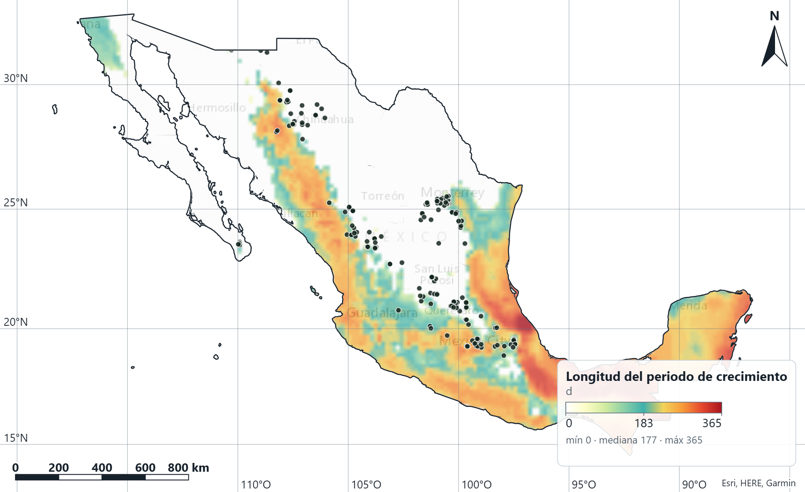
Figura 10.1. La duración del periodo de crecimiento en todo México, calculada con las capas del ejemplo. Se reconoce de un vistazo el contraste entre el norte árido y el sureste húmedo. Cada índice se exporta como imagen, como GeoTIFF georreferenciado o como malla ASCII.
10.4Aptitud de un cultivo
El modelo de aptitud es una envolvente: para cada celda y para cada posible mes de siembra, compara lo que el cultivo necesita —temperatura óptima y límites letales, agua, horas frío, altitud— con lo que el sitio ofrece durante todo el ciclo, y se queda con el mejor mes.
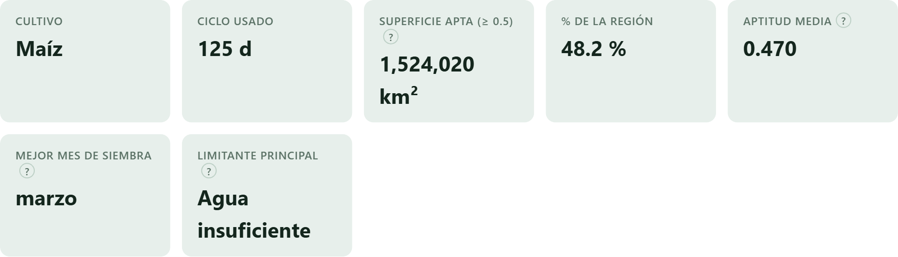
Figura 10.2. El resumen de la aptitud del maíz sobre México, con los índices aproximados derivados de las capas bioclimáticas del ejemplo.
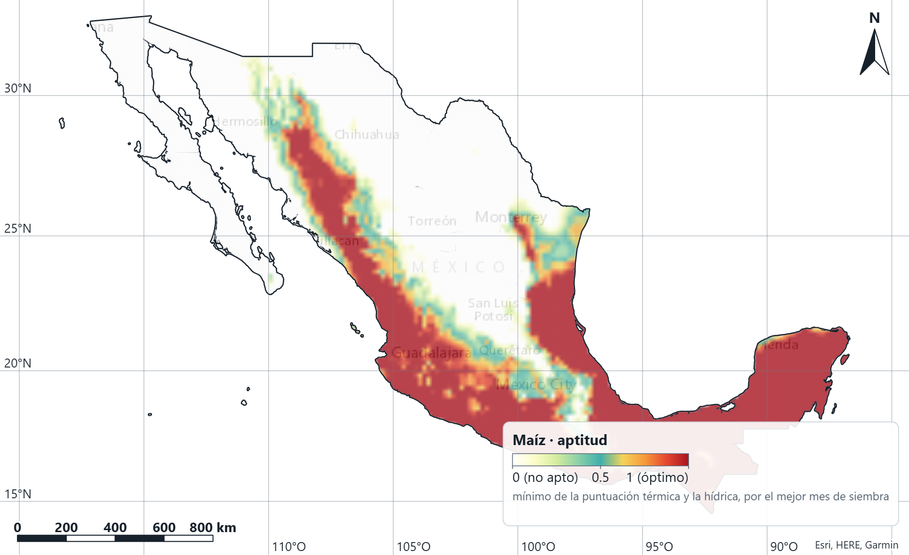
Figura 10.3. La aptitud continua, de 0 a 1. Las zonas más aptas dibujan el centro y el sureste del país, y el norte árido queda con valores bajos.
▸El maíz en México, con los datos del ejemplo
Ciclo de 125 días, 1,524,020 km² con aptitud ≥ 0.5 —el 48.2 % de la región—, aptitud media de 0.470, mejor mes de siembra marzo y limitante principal agua insuficiente. Son cifras calculadas con el ciclo mensual reconstruido, así que valen como ejercicio, no como recomendación técnica: con capas mensuales reales cambiarían, y el mes óptimo depende además del cultivar y del manejo.
10.5El factor limitante
Saber que una celda tiene aptitud 0.3 no dice qué hacer; saber por qué, sí. El mapa de factor limitante pinta, en cada celda, cuál de las condiciones es la que más restringe al cultivo en su mejor mes de siembra.
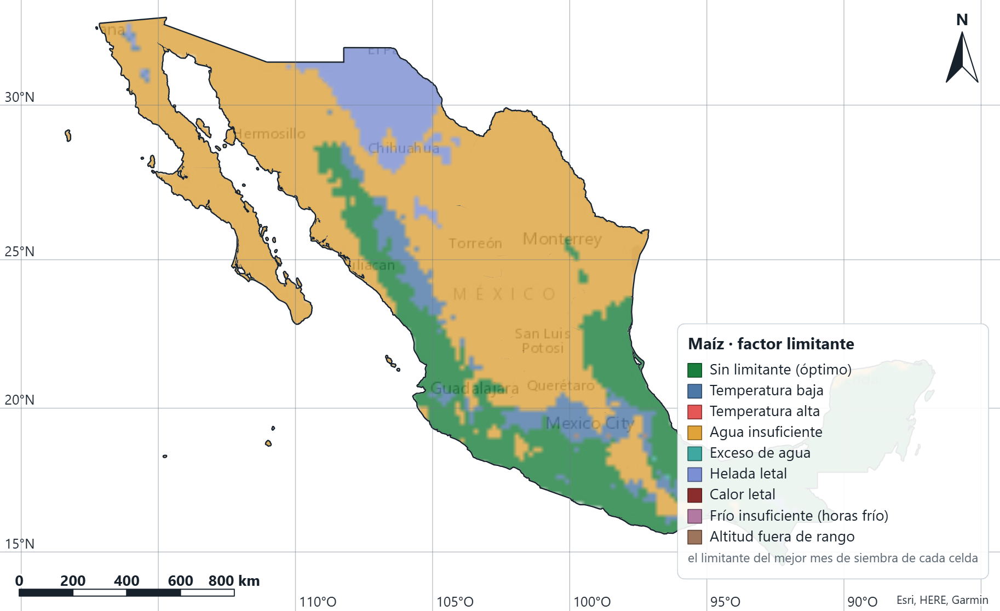
Figura 10.4. El factor limitante del maíz. El ocre del altiplano y del norte es agua insuficiente; el azul de las sierras altas y del norte de Chihuahua, helada letal o temperatura baja; el verde de la vertiente del Pacífico y del sureste, sin limitante. Cada color sugiere una decisión distinta: riego, fecha de siembra, o cambio de cultivar.
10.6El catálogo de cultivos
La app trae un catálogo de más de sesenta cultivos con sus rangos de referencia: temperatura mínima, óptima y máxima, límites letales, duración del ciclo, requerimiento de agua y de horas frío, y rango de altitud. Todo es editable: se pueden cambiar los valores de un cultivo, guardar el catálogo como archivo y volver a cargarlo en otra sesión o en otra computadora.
!Los valores del catálogo son indicativos
Son rangos publicados para la especie en conjunto, no para un cultivar concreto. Un maíz criollo de altura y un híbrido comercial de trópico bajo tienen requerimientos distintos, y el catálogo no puede saber cuál usas. Antes de tomar una decisión real, sustituye los valores por los de tu material: para eso el catálogo es editable, y la app exporta los parámetros que usó junto con los resultados.
10.7Comparar cultivos y análogos
Comparación entre cultivos. Calcula la aptitud de varios a la vez y dibuja el mapa del mejor cultivo por celda, más una tabla con la superficie apta de cada uno. Es la vista que responde «¿qué conviene sembrar aquí?».
Análogos climáticos. Dado un sitio, busca las celdas con clima más parecido. Sirve para trasladar experiencia: si una variedad funciona en tal municipio, ¿dónde más debería funcionar?
10.8Agroclima futuro
Con capas mensuales de un escenario futuro, el bloque repite todo el cálculo y entrega la diferencia: cuánto cambia cada índice, cuánta superficie apta se gana o se pierde, cómo se desplaza el calendario de siembra y qué factor pasa a ser limitante. Es la pregunta que más interesa a quien planea: no «cómo será el clima», sino «qué tendré que cambiar».
Valen las mismas advertencias del capítulo 9: los escenarios son proyecciones con incertidumbre, conviene usar más de un modelo climático y mirar dónde el clima futuro se sale del rango conocido.
10.9Problemas frecuentes
Lo que ves
Qué pasó y qué hacer
Aparece el maíz aunque estudias otra especie
Es el primer cultivo del catálogo, no una predicción sobre tu especie (sección 10.1). Elige otro en la lista.
Los índices salen marcados como «aproximados»
Se derivaron de las capas bioclimáticas porque no hay capas mensuales. Para un informe técnico, carga las 36 capas mensuales.
El mapa no cubre todo el país
Igual que en el Bloque 9: revisa la extensión elegida y vuelve a leer la malla climática. La app dice qué recuadro usó.
Las horas frío salen en cero en todo el mapa
Con el ciclo mensual reconstruido, las horas frío son el índice más frágil. Necesitan capas mensuales reales.
La superficie apta cambia mucho al tocar un parámetro
Es lo esperado en un modelo de envolvente: el resultado es tan bueno como los rangos del catálogo. Documenta los que usaste.
El pH del suelo se reporta pero no se aplica
La app lo advierte: no hay capa de pH, así que ese requerimiento queda fuera del cálculo.
A
Apéndices · Material de consulta
Apéndices
Lo que se consulta sin leer: qué archivos reconoce la app y cómo deben llamarse, las fórmulas con su referencia, el glosario español–inglés, los mensajes de error con su causa, la bibliografía y los componentes de terceros.
AFormatos de archivo
BFórmulas de los índices
CGlosario español–inglés
DMensajes y solución de problemas
EReferencias
FComponentes de terceros
AFormatos de archivo
La app no convierte archivos ni los sube a ningún servidor: los lee en tu computadora. Esta es la lista completa de lo que reconoce y de cómo tiene que llamarse cada cosa.
A.1 · Registros propios (Bloque 1)
Aspecto
Qué acepta
Formato
.csv, .txt (separado por comas, punto y coma o tabuladores), .xlsx, o texto pegado desde una hoja de cálculo.
Columnas mínimas
Especie, longitud y latitud. Los encabezados se reconocen en español y en inglés (especie/species, longitud/lon/longitude, latitud/lat/latitude) y, si no coinciden, se asignan a mano con los tres menús.
Columnas opcionales
País, estado, localidad, año, mes, altitud e incertidumbre en metros. Se reconocen solas y se usan en los filtros del Bloque 2.
Coordenadas
Grados decimales con punto o con coma; grados-minutos-segundos con símbolos o con letras de rumbo. Dos casillas corrigen de golpe la inversión de longitud y latitud y la falta del signo negativo.
Codificación
UTF-8 y la codificación antigua de Windows: los acentos se reparan al leer.
A.2 · Capas ráster (Bloques 5, 9 y 10)
Capa
Nombre de archivo esperado y notas
Bioclimáticas
wc2.1_<res>_bio_1.tif … bio_19.tif, donde <res> es 30s, 2.5m, 5m o 10m. GeoTIFF en coordenadas geográficas (EPSG:4326).
Altitud
wc2.1_<res>_elev.tif
Köppen-Geiger
Un GeoTIFF categórico con los códigos de clase; la tabla de nombres viene incluida en la app.
Mensuales
wc2.1_<res>_tmin_01.tif … _12.tif, y lo mismo para tmax y prec: 36 archivos. También se acepta un archivo de doce bandas por variable.
Escenarios futuros
Un archivo de 19 bandas con las bioclimáticas del escenario, o capas sueltas bio_N. Deben tener la misma resolución y extensión que las del presente.
Regiones propias
GeoJSON de polígonos en EPSG:4326, con un nombre reconocible en las propiedades de cada polígono.
A.3 · Lo que exporta
Tipo
Formatos
Tablas
CSV en todos los bloques: registros crudos y depurados, puntos × variables, métricas, coeficientes, índices agroclimáticos, diversidad.
Puntos
GeoJSON depurado.
Mapas
PNG, JPEG, WebP, TIFF, GeoTIFF georreferenciado y SVG; tamaños de papel con 150, 300 o 600 dpi.
Superficies
GeoTIFF (Float32, EPSG:4326) y malla ASCII (.asc) de la idoneidad y de cada índice agroclimático.
Figuras
SVG vectorial, PNG, JPEG y WebP desde el estudio de figuras.
BFórmulas de los índices
Las mismas que muestran las fichas de ayuda de la app, con la referencia de donde salen. Los símbolos siguen la notación de cada fuente original.
Correlación y selección de variables (Bloque 6)
Correlación de Pearson
r = Σ(x−x̄)(y−ȳ) / √[Σ(x−x̄)² · Σ(y−ȳ)²]
Coeficiente de determinación
r² = r × r
Factor de inflación de la varianza
VIF_j = 1 / (1 − R²_j)
Estadística descriptiva (Bloque 7)
Desviación estándar
DE = √[ Σ(x − x̄)² / (n − 1) ]
Coeficiente de variación
CV % = 100 × DE / |media|
Multivariado, ecología y diversidad (Bloque 8)
Contribución a la dimensión
referencia = 100 / (número de variables)
Inercia (correspondencias)
inercia total = χ² / n
Vecino más cercano
R = distancia media observada / distancia media esperada al azar
Amplitud de nicho de Levins
B = 1 / Σp² ; B estandarizada = (B − 1) / (clases − 1)
Solapamiento de Schoener
D = 1 − ½ Σ |p_A,i − p_B,i|
Shannon
H′ = − Σ p_i · ln(p_i)
Simpson
D = Σ p_i²
Equitatividad de Pielou
J′ = H′ / log(S)
Dominancia de Berger y Parker
d = N_max / N
Riqueza de Margalef y de Menhinick
D_Mg = (S − 1) / ln(N) ; D_Mn = S / √N
Chao1
Chao1 = S + f₁² / (2·f₂)
Modelado (Bloque 9)
TSS
TSS = sensibilidad + especificidad − 1
Omisión
omisión = presencias por debajo del umbral / presencias de prueba
Cada ficha de ayuda de la app trae, además de la fórmula, la escala de lectura, el error más común y la referencia completa. Son 97 fichas repartidas entre los bloques 6 y 10.
CGlosario español–inglés
Los términos de la interfaz y los conceptos del manual, con su forma en inglés para quien lea la literatura o use la app en ese idioma.
Español
Inglés
Qué es
Registro de presencia
occurrence record
La afirmación de que un organismo estuvo en un lugar y un momento.
Solo presencia
presence-only
Datos sin ausencias comprobadas; el contraste se hace contra el ambiente disponible.
Puntos de fondo
background points
Muestra del ambiente disponible en el área de estudio.
Área accesible
accessible area (M)
La parte del mundo a la que la especie ha podido llegar.
Idoneidad
suitability
Parecido ambiental con los sitios ocupados, de 0 a 1.
Umbral
threshold
Valor que convierte la idoneidad en presencia o ausencia.
Bloques espaciales
spatial blocks
Validación que deja fuera regiones enteras, no puntos sueltos.
Extrapolación
extrapolation
Predecir en condiciones que el modelo no vio; se marca con el MESS.
Curva de respuesta
response curve
Cómo cambia la idoneidad al variar una variable.
Importancia por permutación
permutation importance
Caída del desempeño al barajar una variable.
Ensamble
ensemble
Combinación de varios modelos.
Colinealidad
collinearity
Variables que se predicen entre sí.
Adelgazado espacial
spatial thinning
Conservar una presencia por celda.
Extensión de la presencia
extent of occurrence (EOO)
Área del polígono convexo que envuelve los registros.
Área de ocupación
area of occupancy (AOO)
Suma del área de las celdas ocupadas.
Amplitud de nicho
niche breadth
Qué tan amplio es el rango de condiciones que usa la especie.
Solapamiento de nicho
niche overlap
Cuánto comparten dos taxones del espacio ambiental.
Rarefacción
rarefaction
Riqueza esperada a igual esfuerzo de muestreo.
Diversidad beta
beta diversity
Diferencia de composición entre sitios.
Grados-día
growing degree days
Calor acumulado por encima de una temperatura base.
Horas frío
chilling hours
Frío invernal acumulado que necesitan los frutales caducifolios.
Periodo de crecimiento
length of growing period
Días con temperatura y humedad suficientes.
Factor limitante
limiting factor
La condición que más restringe al cultivo en cada celda.
Análogos climáticos
climatic analogues
Sitios con clima parecido a uno de referencia.
DMensajes y solución de problemas
Los avisos que la app puede mostrar, con su causa y su remedio. Cada capítulo tiene además su propia tabla de problemas frecuentes.
Mensaje
Qué significa y qué hacer
«No se pudo consultar GBIF»
Sin conexión o servicio caído. Usa el ejemplo incluido o tus propios archivos y reintenta más tarde.
«Se perdió la conexión con GBIF»
La descarga se cortó tras seis intentos. La app ofrece usar los registros que sí llegaron.
«GBIF respondió 429 / 503»
Demasiadas peticiones o servicio saturado. La app espera y reintenta sola; si insiste, prueba en unos minutos.
«Primero extrae los valores ráster»
El Bloque 6 necesita la tabla de puntos × variables del Bloque 5.
«No se reconoció ninguna capa»
Los nombres de archivo no siguen el patrón del apéndice A.2.
«La malla preparada usa la extensión…»
Aviso informativo: dice con qué recuadro se preparó el modelo. Si cambiaste la extensión después, vuelve a preparar.
«N registros quedan fuera de la extensión»
Esos registros caen fuera del recuadro elegido y no entran al modelo. Es una decisión tuya, no un error.
«Pocas presencias (<15)»
El modelo será inestable. Amplía el área, usa capas de mayor resolución o cambia a un método de envolvente.
«Los índices se derivarán de las capas bioclimáticas»
No hay capas mensuales: los índices agroclimáticos salen de un ciclo reconstruido y se marcan como aproximados.
«El rango de pH se reporta pero no se aplica»
No hay capa de pH del suelo, así que ese requerimiento del cultivo queda fuera del cálculo.
«Error leyendo los GeoTIFF»
Archivo dañado o en una proyección distinta de EPSG:4326.
El motor de cálculo tarda en cargar
Es la primera vez en la sesión: se descarga Python dentro del navegador. Después queda en memoria.
EReferencias
La bibliografía de los métodos que usa el programa. Es la misma lista que aparece en la portada de la app, donde cada método enlaza con su referencia.
Allen RG, Pereira LS, Raes D, Smith M (1998) Crop Evapotranspiration: Guidelines for Computing Crop Water Requirements. FAO Irrigation and Drainage Paper 56, Roma.
Allouche O, Tsoar A, Kadmon R (2006) Assessing the accuracy of species distribution models: prevalence, kappa and the true skill statistic (TSS). Journal of Applied Ecology 43:1223–1232.
Araújo MB, New M (2007) Ensemble forecasting of species distributions. Trends in Ecology & Evolution 22:42–47.
Baselga A (2010) Partitioning the turnover and nestedness components of beta diversity. Global Ecology and Biogeography 19:134–143.
Beck HE, Zimmermann NE, McVicar TR, Vergopolan N, Berg A, Wood EF (2018) Present and future Köppen-Geiger climate classification maps at 1-km resolution. Scientific Data 5:180214.
Breiman L (2001) Random forests. Machine Learning 45:5–32.
Busby JR (1991) BIOCLIM — a bioclimate analysis and prediction system. En: Margules CR, Austin MP (eds) Nature Conservation: Cost Effective Biological Surveys and Data Analysis. CSIRO, pp 64–68.
Carpenter G, Gillison AN, Winter J (1993) DOMAIN: a flexible modelling procedure for mapping potential distributions of plants and animals. Biodiversity and Conservation 2:667–680.
Chao A (1984) Nonparametric estimation of the number of classes in a population. Scandinavian Journal of Statistics 11:265–270.
Chao A, Jost L (2012) Coverage-based rarefaction and extrapolation: standardizing samples by completeness rather than size. Ecology 93:2533–2547.
Chapman AD (2005) Principles and Methods of Data Cleaning: Primary Species and Species-Occurrence Data. Global Biodiversity Information Facility, Copenhague.
Clark PJ, Evans FC (1954) Distance to nearest neighbor as a measure of spatial relationships in populations. Ecology 35:445–453.
Colwell RK, Chao A, Gotelli NJ, Lin S-Y, Mao CX, Chazdon RL, Longino JT (2012) Models and estimators linking individual-based and sample-based rarefaction, extrapolation and comparison of assemblages. Journal of Plant Ecology 5:3–21.
Cortes C, Vapnik V (1995) Support-vector networks. Machine Learning 20:273–297.
Dormann CF, Elith J, Bacher S, et al. (2013) Collinearity: a review of methods to deal with it and a simulation study evaluating their performance. Ecography 36:27–46.
Elith J, Graham CH, Anderson RP, et al. (2006) Novel methods improve prediction of species’ distributions from occurrence data. Ecography 29:129–151.
Elith J, Kearney M, Phillips S (2010) The art of modelling range-shifting species. Methods in Ecology and Evolution 1:330–342.
Elith J, Leathwick JR (2009) Species distribution models: ecological explanation and prediction across space and time. Annual Review of Ecology, Evolution, and Systematics 40:677–697.
Elith J, Leathwick JR, Hastie T (2008) A working guide to boosted regression trees. Journal of Animal Ecology 77:802–813.
Elith J, Phillips SJ, Hastie T, Dudík M, Chee YE, Yates CJ (2011) A statistical explanation of MaxEnt for ecologists. Diversity and Distributions 17:43–57.
Farber O, Kadmon R (2003) Assessment of alternative approaches for bioclimatic modeling with special emphasis on the Mahalanobis distance. Ecological Modelling 160:115–130.
Fick SE, Hijmans RJ (2017) WorldClim 2: new 1-km spatial resolution climate surfaces for global land areas. International Journal of Climatology 37:4302–4315.
Guisan A, Edwards TC, Hastie T (2002) Generalized linear and generalized additive models in studies of species distributions: setting the scene. Ecological Modelling 157:89–100.
Hargreaves GH, Samani ZA (1985) Reference crop evapotranspiration from temperature. Applied Engineering in Agriculture 1:96–99.
Hastie T, Tibshirani R, Friedman J (2009) The Elements of Statistical Learning, 2.ª ed. Springer, Nueva York.
Hill MO (1973) Diversity and evenness: a unifying notation and its consequences. Ecology 54:427–432.
Hirzel AH, Le Lay G, Helfer V, Randin C, Guisan A (2006) Evaluating the ability of habitat suitability models to predict species presences. Ecological Modelling 199:142–152.
Hutchinson GE (1957) Concluding remarks. Cold Spring Harbor Symposia on Quantitative Biology 22:415–427.
Jost L (2006) Entropy and diversity. Oikos 113:363–375.
Levins R (1968) Evolution in Changing Environments. Princeton University Press.
Lobo JM, Jiménez-Valverde A, Real R (2008) AUC: a misleading measure of the performance of predictive distribution models. Global Ecology and Biogeography 17:145–151.
Peterson AT, Soberón J, Pearson RG, et al. (2011) Ecological Niches and Geographic Distributions. Princeton University Press.
Phillips SJ, Anderson RP, Schapire RE (2006) Maximum entropy modeling of species geographic distributions. Ecological Modelling 190:231–259.
Phillips SJ, Dudík M, Elith J, et al. (2009) Sample selection bias and presence-only distribution models: implications for background and pseudo-absence data. Ecological Applications 19:181–197.
Poggio L, de Sousa LM, Batjes NH, et al. (2021) SoilGrids 2.0: producing soil information for the globe with quantified spatial uncertainty. SOIL 7:217–240.
Ramirez-Villegas J, Jarvis A, Läderach P (2013) Empirical approaches for assessing impacts of climate change on agriculture: the EcoCrop model and a case study with grain sorghum. Agricultural and Forest Meteorology 170:67–78.
Renner IW, Warton DI (2013) Equivalence of MAXENT and Poisson point process models for species distribution modeling in ecology. Biometrics 69:274–281.
Roberts DR, Bahn V, Ciuti S, et al. (2017) Cross-validation strategies for data with temporal, spatial, hierarchical, or phylogenetic structure. Ecography 40:913–929.
Schoener TW (1968) The Anolis lizards of Bimini: resource partitioning in a complex fauna. Ecology 49:704–726.
Shannon CE (1948) A mathematical theory of communication. Bell System Technical Journal 27:379–423.
Simpson EH (1949) Measurement of diversity. Nature 163:688.
Soberón J, Peterson AT (2005) Interpretation of models of fundamental ecological niches and species’ distributional areas. Biodiversity Informatics 2:1–10.
UNEP (1992) World Atlas of Desertification. United Nations Environment Programme, Nairobi.
Las fichas de ayuda de la app citan, además de estas, las fuentes de cada índice de diversidad, de cada prueba de normalidad y de cada método de agrupamiento: en total 86 referencias distintas, cada una junto al número que explica.
FComponentes de terceros
Todo el análisis, las figuras y los mapas de BioModelling Pro son código propio. Lo que viene de fuera es esto, con su licencia; el detalle completo está en vendor/THIRD-PARTY-NOTICES.txt.
Componente
Para qué y con qué licencia
Leaflet
Los mapas interactivos. Licencia BSD de 2 cláusulas.
geotiff.js
Lectura de GeoTIFF por ventanas. Licencia MIT.
html2canvas
Composición de la imagen al exportar un mapa. Licencia MIT.
Pyodide
El motor de Python dentro del navegador, con NumPy, SciPy, pandas, scikit-learn, statsmodels y Matplotlib. Licencia MPL-2.0 y las de cada paquete.
Natural Earth
Los límites de los 32 estados de México (escala 1:10 millones). Dominio público.
Teselas de mapa
Fondos cartográficos de varios proveedores, usados bajo sus condiciones y con su atribución en el mapa.
Tipografías
Cormorant, Crimson Pro y Jost, con licencia SIL Open Font License 1.1 (solo en este manual).
iDatos
Los registros del ejemplo proceden de GBIF y conservan la licencia de cada publicador; las capas climáticas del ejemplo son un recorte de WorldClim 2.1 y del mapa de Köppen-Geiger de Beck y colaboradores. Cítalos siempre que uses resultados obtenidos con ellos.